<!doctype html>
<html lang="en">
<head>
  <meta charset="utf-8">
  <meta name="viewport" content="width=device-width, initial-scale=1">
  <title>arxiv digest — 2026-07-08</title>
  <style>
:root {
  --bg: #ffffff;
  --fg: #1f2328;
  --muted: #59636e;
  --border: #d0d7de;
  --card: #f6f8fa;
  --link: #0969da;
}
body {
  max-width: 980px;
  margin: 0 auto;
  padding: 2rem 1rem 5rem;
  font-family: -apple-system, BlinkMacSystemFont, "Segoe UI", Helvetica, Arial, sans-serif;
  line-height: 1.55;
  color: var(--fg);
  background: var(--bg);
}
a { color: var(--link); }
img { max-width: 100%; height: auto; }
pre, code { background: var(--card); border-radius: 6px; }
pre { padding: 1rem; overflow-x: auto; }
blockquote { border-left: 4px solid var(--border); padding-left: 1rem; color: var(--muted); }
details { margin: 0.6rem 0; }
summary { cursor: pointer; font-weight: 600; }
.paper-figures-scroll {
  display: flex;
  gap: 1rem;
  overflow-x: auto;
  overscroll-behavior-x: contain;
  padding: 0.75rem 0.25rem 1rem;
  margin: 1rem 0 1.25rem;
  border-top: 1px solid var(--border);
  border-bottom: 1px solid var(--border);
  scroll-snap-type: x proximity;
}
.paper-figure-card {
  flex: 0 0 min(260px, 72vw);
  scroll-snap-align: start;
  background: var(--card);
  border: 1px solid var(--border);
  border-radius: 12px;
  padding: 0.55rem;
}
.paper-figure-card img {
  display: block;
  width: 100%;
  max-height: 240px;
  object-fit: contain;
  background: white;
  border-radius: 8px;
}
.paper-figure-caption {
  display: block;
  margin-top: 0.5rem;
  color: var(--muted);
  font-size: 0.85rem;
}
.figure-strip-hint {
  color: var(--muted);
  font-size: 0.9rem;
  margin-bottom: -0.3rem;
}
</style>
  <!-- MathJax: renders $...$ inline math and $$...$$ display math, plus
       \(...\) and \[...\]. Loaded from the official CDN; works offline
       once cached. Configured to skip code/pre blocks so arxiv IDs that
       look like dollar amounts don't get mangled. -->
  <script>
    window.MathJax = {
      tex: {
        inlineMath: [['$', '$'], ['\\(', '\\)']],
        displayMath: [['$$', '$$'], ['\\[', '\\]']],
        processEscapes: true,
        processEnvironments: true
      },
      options: {
        skipHtmlTags: ['script', 'noscript', 'style', 'textarea', 'pre', 'code'],
        ignoreHtmlClass: 'tex2jax_ignore',
        processHtmlClass: 'tex2jax_process'
      }
    };
  </script>
  <script id="MathJax-script" async
    src="https://cdn.jsdelivr.net/npm/mathjax@3/es5/tex-chtml.js"></script>
</head>
<body>
<header style="background-color: #333; color: white; padding: 15px; margin-bottom: 20px;">
  <h1 style="margin: 0; font-size: 24px;">
    <a href="https://ochelpan.github.io/arXiv_clean/" style="color: white; text-decoration: none;">Main</a>
  </h1>
</header>

<h1>Daily arXiv Report</h1>

<hr>
<p>
<a href="index.html">← Index</a>
 · <a href="papers_02.html">Next →</a>
</p>
<hr>

<h2>Papers 1–20</h2>
<p><a id="paper-2607.04455"></a></p>
<h3 id="controlling-many-body-quantum-chaos-in-a-dissipative-optical-cavity">⭐ <a href="http://arxiv.org/abs/2607.04455v1">Controlling many-body quantum chaos in a dissipative optical cavity</a></h3>
<p><strong>Highlighted author(s):</strong> Jean-Philippe Brantut<br>
<strong>Authors:</strong> Filippo Ferrari, Francesca Orsi, Ekaterina Fedotova, Óscar Rios Alves, Michał Zdziennicki, Jean-Philippe Brantut, Vincenzo Savona<br>
<strong>Type:</strong> theory · <strong>Category:</strong> other · <strong>PDF:</strong> <a href="https://arxiv.org/pdf/2607.04455v1">https://arxiv.org/pdf/2607.04455v1</a><br>
<strong>Analysis basis:</strong> full PDF text, analyzed in chunks
<strong>Topic relevance:</strong> 🔥 <code>methods for driven-dissipative</code> <strong>5/5</strong> · 🔥 <code>analog quantum simulation</code> <strong>4/5</strong> · 🔥 <code>correlated / nonlocal dissipation</code> <strong>4/5</strong> · 🔥 <code>correlated cavity matter</code> <strong>4/5</strong> · 🔥 <code>entanglement &amp; information structure</code> <strong>4/5</strong> · <code>Tavis-Cummings &amp; cavity-many-emitter</code> <strong>3/5</strong> · <code>driven-dissipative phase transition</code> <strong>3/5</strong> · <code>non-equilibrium dynamics</code> <strong>3/5</strong> · <code>quantum measurements</code> <strong>3/5</strong> · <code>Keldysh / 2PI / non-Gaussian methods</code> <strong>2/5</strong> · <code>non-equilibrium universality</code> <strong>2/5</strong> · <code>Kondo &amp; dissipative impurity</code> <strong>1/5</strong> · <code>exotic spin models in light-matter</code> <strong>1/5</strong> · <code>measurement-induced transitions</code> <strong>1/5</strong> · <code>scars &amp; prethermalization</code> <strong>1/5</strong></p>
<div class="figure-strip-hint">↔ Scroll figures horizontally</div>
<div class="paper-figures-scroll">
<figure class="paper-figure-card">

<figcaption class="paper-figure-caption"><b>Fig 1.</b> FIG. 1. Sketch of the experimental setup: a high-finesse op- tical cavity is coupled to a cloud of driven ultracold fermionic atoms. The light-matter interaction is disordered by an en- gineered, time-dependent speckle potential projected on the atomic ensemble, thus realizing a quantum chaotic many- body system. Two sources of decoherence disturb the unitary quantum dynamics: the cavity dissipation at a rate κ and the atomic spontaneous emission at a rate Γ.</figcaption>
</figure>
<figure class="paper-figure-card">
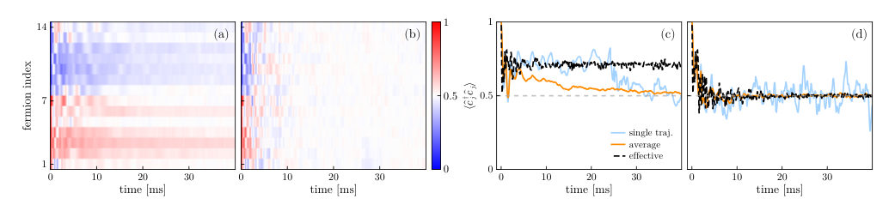
<figcaption class="paper-figure-caption"><b>Fig 2.</b> FIG. 2. (a-b) Averaged dynamics of ⟨ˆc† jˆcj⟩for N = 14 fermionic modes at half filling. We consider the cavity-fermion system described in Eq. (1) with (a) static disorder and (b) dynamical disorder [the f-RQC protocol in Eq. (3)], accounting for cavity dissipation at rate κ and spontaneous emission at rate Γ. (c-d) Comparison between the dissipative quantum trajectory averaged dynamics (orange curves), the single-trajectory averaged dynamics (light blue curves) and the effective dynamics generated by Eq. (2) with κ, Γ = 0 (black-dahsed curves) for (c) static disorder and (d) the f-RQC protocol, and for j = 4. As initial state we choose |Ψ(0)⟩= |1 ... 1 0 ... 0⟩. Parameters are fixed to...</figcaption>
</figure>
<figure class="paper-figure-card">
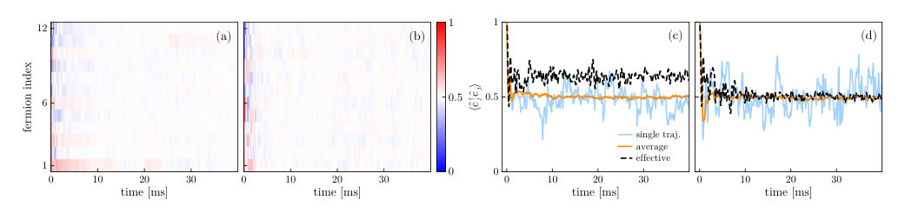
<figcaption class="paper-figure-caption"><b>Fig 3.</b> FIG. 3. Same as in Fig. 2 but for ∆cd/2π = 1 MHz. The drive amplitude has been increased to Ωd/2π = 38 MHz to match the same E in the simulations reported in Fig. 2. The number of fermionic modes is N = 12. Other parameters as in Fig. 2.</figcaption>
</figure>
<figure class="paper-figure-card">

<figcaption class="paper-figure-caption"><b>Fig 4.</b> FIG. 4. Entanglement entropy dynamics for (a) the effective model in Eq. (2), (b-c) the full model in Eq. (1) with nonzero κ, Γ, for ∆cd = κ/2 and ∆cd = 5κ respectively. We consider the f-RQC protocol with n = 2N + 1. The gray-dashed line represent to the Page prediction for a U(1) symmetric system at half filling. Results are reported for N = 8, 10, 12, 14 fermionic modes at half filling (from light to dark orange) and are averaged over Ntraj = 100 trajectories [except N = 14 in panel (c), for which Ntraj = 20]. (d) Relative distance from Page entropy δSN/2 = |SN/2 −SPage|/SPage as a function of C for ∆cd = 2κ (Ωd/2π = 25 MHz) and different N. Data are averaged over Ntraj = 100...</figcaption>
</figure>
<figure class="paper-figure-card">

<figcaption class="paper-figure-caption"><b>Fig 5.</b> FIG. 6. Effects of the trap Hamiltonian for 171Yb atoms (first row) and 6Li atoms (second row) on the quantum many- body dynamics. The first column refers to the static disorder configuration. The second column to the f-RQC protocol. All the parameters are fixed as in Fig. 2.</figcaption>
</figure>
</div>

<p><strong>Summary.</strong> The paper investigates controlling and diagnosing many-body quantum chaos in dissipative cavity QED systems. It distinguishes between two types of dissipation—cavity loss and spontaneous emission—showing they affect system diagnostics differently. The findings provide quantitative guidelines for realizing and observing genuine quantum chaotic behavior despite environmental decoherence.</p>
<p><strong>Why it may be interesting.</strong> This work is highly relevant as it tackles the crucial issue of decoherence in quantum simulation platforms, providing a detailed comparison of how different physical noise sources degrade or preserve signatures of complex many-body dynamics like quantum chaos.</p>
<details>
<summary>Detailed structure</summary>
<p><strong>Main problem.</strong> The study focuses on controlling many-body quantum chaos within an open system framework provided by a dissipative optical cavity.</p>
<p><strong>Main result.</strong> The two primary dissipation sources (cavity loss vs. spontaneous emission) affect the signatures of quantum chaos differently: cavity loss preserves these signatures, while spontaneous emission erases them for linear observables.</p>
<p><strong>Method.</strong> The authors analyze driven-dissipative dynamics using Lindblad master equations and compare results from stochastic quantum trajectories against effective unitary models.</p>
<p><strong>Model / system.</strong> The system is a Cavity Quantum Electrodynamics (QED) setup involving ultracold fermions, characterized by controllable disorder and long-range photon-mediated interactions. The dynamics are governed by dissipation from cavity loss ($\kappa$) and atomic spontaneous emission ($\Gamma$).</p>
<p><strong>Key observables.</strong> Entanglement entropy ($S_{N/2}$), fermionic population $\langle \hat{c}^\dagger_j \hat{c}_j 
angle$, and Out-of-Time-Ordered Correlators (OTOCs).</p>
<p><strong>Important parameters / regimes.</strong> Cooperativity $C = \Omega^2/(\kappa\Gamma)$, Lamb-Dicke parameter $\eta$, and the detuning ratio $|\Delta_{cd}| / \kappa$.</p>
<p><strong>Assumptions / limitations.</strong> The analysis assumes working in the dispersive regime ($\Delta_{cd}$ large) and involves deriving quantitative constraints based on experimentally realistic parameters.</p>
<p><strong>Figures summary.</strong> Figures illustrate the setup showing decoherence sources, averaged dynamics of fermionic populations under different disorder types, and entanglement entropy saturation relative to the Page bound under varying dissipation regimes.</p>
<p><strong>Paper structure.</strong> The paper systematically analyzes the open system dynamics by comparing the effects of cavity loss versus spontaneous emission on chaos diagnostics. It moves from general model setup (Hamiltonian/Lindblad) to specific diagnostic comparisons (linear observables vs. entanglement entropy) and concludes with quantitative constraints for experimental realization.</p>
</details>
<details>
<summary>Abstract</summary>
<p>Cavity quantum electrodynamics (QED) with ultracold fermions provides a promising platform for realizing many-body quantum chaos through disordered, photon-mediated long-range interactions. Such setups are inherently open and are therefore subject to dissipation arising from cavity photon loss and atomic spontaneous emission. In this article, we study the driven-dissipative dynamics of a typical cavity QED setting including controllable disorder and long-range interactions. We find that the two dissipation sources have qualitatively different structures. Cavity loss reduces to a single dephasing channel, whereas spontaneous emission in the experimentally relevant regime generates a collection of nonlocal dephasing channels. Cavity-induced dephasing preserves signatures distinguishing integrable from chaotic Hamiltonian dynamics in observables that depend linearly on the density matrix, while spontaneous emission suppresses these signatures. By contrast, quantities that probe the structure of the many-body state, such as the entanglement entropy, are strongly affected by both dissipation mechanisms. Assuming experimentally realistic parameters, we derive quantitative constraints for the observation and control of many-body quantum chaos in cavity-QED platforms.</p>
</details>
<p><sub><a href="#top">↑ back to top</a></sub></p>

<p><a id="paper-2607.05343"></a></p>
<h3 id="quantum-computational-resources-and-conformal-field-theory-unifying-spins-bosons-and-fermions">⭐ <a href="http://arxiv.org/abs/2607.05343v1">Quantum Computational Resources and Conformal Field Theory: Unifying Spins, Bosons, and Fermions</a></h3>
<p><strong>Highlighted author(s):</strong> Yuto Ashida<br>
<strong>Authors:</strong> Ryota Matsuda, Masahiro Hoshino, Yuto Ashida<br>
<strong>Type:</strong> theory · <strong>Category:</strong> other · <strong>PDF:</strong> <a href="https://arxiv.org/pdf/2607.05343v1">https://arxiv.org/pdf/2607.05343v1</a><br>
<strong>Analysis basis:</strong> full PDF text, analyzed in chunks
<strong>Topic relevance:</strong> 🔥 <code>entanglement &amp; information structure</code> <strong>4/5</strong> · <code>Keldysh / 2PI / non-Gaussian methods</code> <strong>2/5</strong> · <code>analog quantum simulation</code> <strong>2/5</strong> · <code>non-equilibrium universality</code> <strong>2/5</strong> · <code>correlated / nonlocal dissipation</code> <strong>1/5</strong> · <code>driven-dissipative phase transition</code> <strong>1/5</strong> · <code>exotic spin models in light-matter</code> <strong>1/5</strong> · <code>methods for driven-dissipative</code> <strong>1/5</strong> · <code>non-equilibrium dynamics</code> <strong>1/5</strong></p>
<div class="figure-strip-hint">↔ Scroll figures horizontally</div>
<div class="paper-figures-scroll">
<figure class="paper-figure-card">
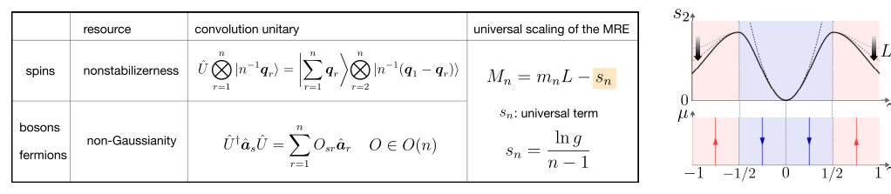
<figcaption class="paper-figure-caption"><b>Fig 1.</b> FIG. 1. Summary of the main results. (a) Unified structure of the quantum computational resources for spins, bosons, and fermions. The MRE Mn with order n is constructed by a convolution unitary in all cases. In spins with a local Hilbert-space dimension d, the MRE reduces to the SRE, a measure of nonstabilizerness. In bosons and fermions, the MRE quantifies non- Gaussianity. In one-dimensional critical systems, the MRE can exhibit the same universal behavior across all cases, where a size-independent term sn is determined by the g factor of the infrared boundary condition in the replicated theory. (b) Upper panel: Universal behavior of non-Gaussianity of interacting fermions described by...</figcaption>
</figure>
<figure class="paper-figure-card">
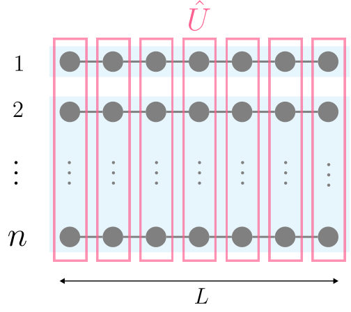
<figcaption class="paper-figure-caption"><b>Fig 2.</b> FIG. 2. Schematic illustration of quantum convolution. The replica-mixing unitary U is applied to n copies of the many- body state, after which replicas 2, 3, . . . , n are traced out. The unitary U generates correlations among the replicas only for resourceful states, so that the output replica left after the partial trace becomes mixed. The MRE detects the magic by measuring the purity of the resulting convolved state.</figcaption>
</figure>
<figure class="paper-figure-card">
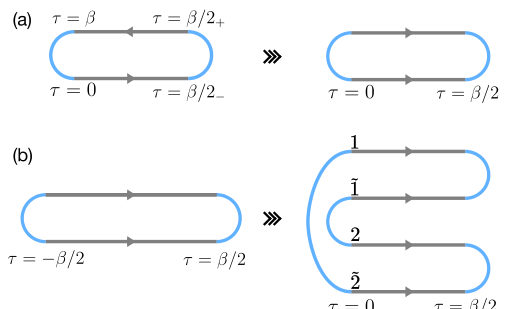
<figcaption class="paper-figure-caption"><b>Fig 3.</b> FIG. 3. Folding representations of the thermal partition func- tion and the purity numerator. The upper panel (a) shows the ordinary thermal path integral (left) and its Liouville-space folded-strip representation (right) in Eq. (77). The lower panel (b) shows the corresponding purity geometry and its second folding into the two-replica Liouville-space expression in Eq. (80).</figcaption>
</figure>
<figure class="paper-figure-card">
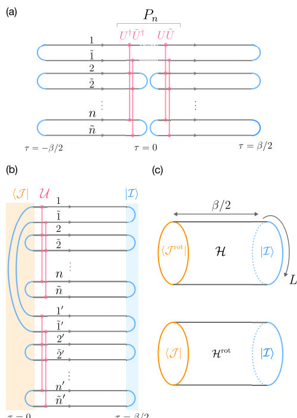
<figcaption class="paper-figure-caption"><b>Fig 4.</b> FIG. 4. Euclidean path-integral representation of the MRE in Eq. (86). (a) Folded theory with 2n sheets of size L × β/2. (b) 4n-sheet replicated theory obtained after an additional folding. In both panels, the spatial direction is abbreviated for simplicity. (c) Two interpretations of the MRE. The upper panel describes the rotated-boundary picture. While the bulk theory H consists of the product of each decoupled replica, an application of the convolution unitary to the edge leads to the rotated boundary state |J rot⟩⟩= U †|J ⟩⟩. The lower panel describes the rotated-bulk picture. The convolution unitary is applied to the bulk and leads to the rotated bulk Hamiltonian Hrot = UHU † with...</figcaption>
</figure>
<figure class="paper-figure-card">
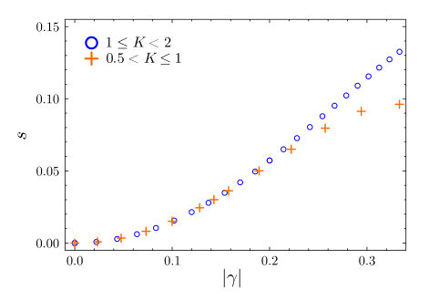
<figcaption class="paper-figure-caption"><b>Fig 5.</b> FIG. 6. The universal constant term s for 1/2 &lt; K &lt; 2 against |γ| = |K −1|/|K +1|, which is invariant under the du- ality transformation K ↔K−1. The data points are obtained by fitting the numerical data of M to the scaling form (165) with L = 10, 12, 14 (L0 = 12).</figcaption>
</figure>
</div>

<p><strong>Summary.</strong> The paper introduces the Magic Rényi Entropy (MRE) as a unified resource measure applicable to spins, bosons, and fermions. Using Conformal Field Theory, it demonstrates that this MRE captures universal features related to non-Gaussianity in fermionic systems like the Tomonaga-Luttinger liquid. This provides a powerful, unified theoretical framework for understanding quantum resources across different physical matter types.</p>
<p><strong>Why it may be interesting.</strong> This work bridges quantum information theory (resource quantification) directly into condensed matter physics by applying advanced tools like CFT to understand fundamental properties of interacting critical systems beyond simple entanglement measures.</p>
<details>
<summary>Detailed structure</summary>
<p><strong>Main problem.</strong> The goal is to develop a unified, information-theoretic measure (Magic Rényi Entropy) to characterize quantum computational resources across diverse many-body systems: spins, bosons, and fermions.</p>
<p><strong>Main result.</strong> The Magic Rényi Entropy unifies nonstabilizerness (spins) and non-Gaussianity (bosons/fermions), showing that the universal contribution is governed by the Affleck-Ludwig boundary entropy. Furthermore, non-Gaussianity can drive continuous renormalization or phase transitions in these critical states.</p>
<p><strong>Method.</strong> The study employs Conformal Field Theory (CFT) analysis on a unified measure derived from replicated state convolutions, supplemented by field-theoretical path integrals and numerical confirmations.</p>
<p><strong>Model / system.</strong> The work analyzes spin systems, bosonic models, and fermionic systems, with a concrete demonstration using the Tomonaga-Luttinger liquid describing interacting spinless fermions. The analysis is rooted in critical phenomena theory.</p>
<p><strong>Key observables.</strong> Magic Rényi Entropy (MRE), Stabilizer Rényi Entropy (SRE), Non-Gaussianity measures, and the Affleck-Ludwig boundary entropy ($s_n$).</p>
<p><strong>Important parameters / regimes.</strong> Luttinger parameters ($K$), the non-Gaussianity parameter $\gamma = (K-1)/(K+1)$, and the system size $L$.</p>
<p><strong>Assumptions / limitations.</strong> The core assumption is that nonstabilizerness and non-Gaussianity share a mathematically unified structure allowing for a single resource measure.</p>
<p><strong>Figures summary.</strong> Figure 1(a) illustrates the unified MRE framework across different particle types. Figure 1(b) specifically plots the universal contribution of non-Gaussianity versus $\gamma$ for TLL fermions, showing the free-fermion point at $\gamma=0$.</p>
<p><strong>Paper structure.</strong> The paper introduces the MRE as a unifying concept, derives its CFT formulation using replicated path integrals, analyzes the size-independent boundary entropy term, and culminates in a detailed application to non-Gaussianity in TLL fermions, confirming predictions via numerical methods.</p>
</details>
<details>
<summary>Abstract</summary>
<p>Characterizing a quantum state through the lens of quantum resources provides an information-theoretic perspective on many-body systems. While quantum entanglement serves as the paradigmatic example of a quantum resource, recent studies have shown that quantum magic, a resource for universal quantum computation, can capture aspects of many-body states complementary to those described by entanglement. For instance, in spin systems, conformal field theory (CFT) analysis of the stabilizer Rényi entropy has revealed universal features of nonstabilizerness that are qualitatively distinct from entanglement. In bosonic and fermionic systems, however, a comparable formulation for their computational resource, non-Gaussianity, has yet to be established. In this work, we introduce a unified measure, the magic Rényi entropy (MRE), to quantify computational resources in spins, bosons, and fermions on an equal footing. This allows us to reveal common universal aspects of nonstabilizerness and non-Gaussianity in critical many-body states. In particular, our CFT analysis shows that the universal contribution to the MRE appears as the size-independent term determined by the Affleck-Ludwig boundary entropy. We find that non-Gaussianity can continuously renormalize this universal contribution or drive a boundary phase transition through bulk-induced boundary renormalization-group flows. As a concrete demonstration, we present a detailed CFT analysis of non-Gaussianity in interacting spinless fermions described by the Tomonaga-Luttinger liquid, showing boundary transitions at the Luttinger parameters $K=1/3$ and $K=3$. We perform numerical calculations that confirm our field-theoretical predictions. These results provide a unified field-theoretical understanding of many-body magic across spins, bosons, and fermions.</p>
</details>
<p><sub><a href="#top">↑ back to top</a></sub></p>

<p><a id="paper-2607.04040"></a></p>
<h3 id="quantum-simulation-of-gauge-theories-on-dynamical-spacetimes-via-floquet-induced-matrix-models">⭐ <a href="http://arxiv.org/abs/2607.04040v1">Quantum simulation of gauge theories on dynamical spacetimes via Floquet-induced matrix models</a></h3>
<p><strong>Highlighted author(s):</strong> Susanne F. Yelin<br>
<strong>Authors:</strong> Samuel Buckley-Bonanno, Noah Eckstein, Susanne F. Yelin<br>
<strong>Type:</strong> theory · <strong>Category:</strong> statistical mechanics · <strong>PDF:</strong> <a href="https://arxiv.org/pdf/2607.04040v1">https://arxiv.org/pdf/2607.04040v1</a><br>
<strong>Analysis basis:</strong> full PDF text, analyzed in chunks
<strong>Topic relevance:</strong> <code>analog quantum simulation</code> <strong>3/5</strong> · <code>methods for driven-dissipative</code> <strong>3/5</strong> · <code>non-equilibrium dynamics</code> <strong>3/5</strong> · <code>Keldysh / 2PI / non-Gaussian methods</code> <strong>2/5</strong> · <code>non-equilibrium universality</code> <strong>2/5</strong> · <code>driven-dissipative phase transition</code> <strong>1/5</strong> · <code>entanglement &amp; information structure</code> <strong>1/5</strong> · <code>quantum measurements</code> <strong>1/5</strong></p>
<div class="figure-strip-hint">↔ Scroll figures horizontally</div>
<div class="paper-figures-scroll">
<figure class="paper-figure-card">
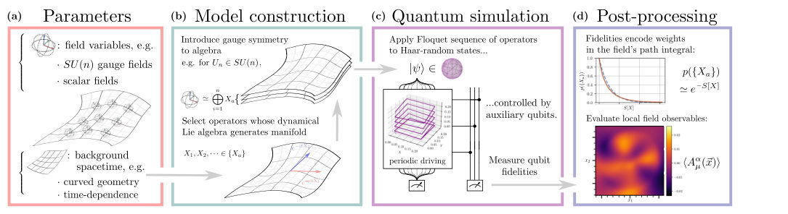
<figcaption class="paper-figure-caption"><b>Fig 1.</b> FIG. 1. Matrix model quantum simulation procedure. (a) Given a specification of bosonic fields on a spacetime, there is an associated matrix state that encodes their Lagrangian. The fields can be scalar or Yang-Mills or other gauge fields, and the background spacetime can be curved and time-dependent. (b) The construction of the associated matrix state proceeds from these parameters. The spacetime geometry is encoded first by selecting a set of Hermitian operators whose dynamical Lie algebra maps in the commutative limit to the desired manifold. Field symmetries are then introduced to the set of matrices: U(n) non-commutative Yang-Mills fields are formed with a direct sum of n copies of the...</figcaption>
</figure>
<figure class="paper-figure-card">
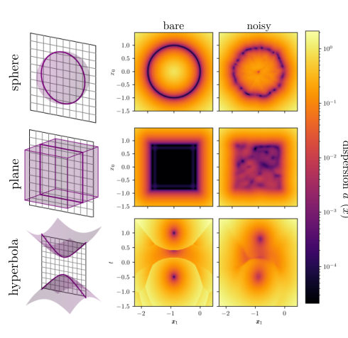
<figcaption class="paper-figure-caption"><b>Fig 2.</b> FIG. 2. Displacement plots of non-commutative ge- ometries. Elementary manifolds can be encoded as non- commutative geometries in terms of matrix representations. We show cross-sections for spherical, flat and hyperbolic ge- ometries. For the non-commutative sphere, we use high- dimensional representations of SU(2) angular momentum op- erators; the non-commutative plane is constructed from fi- nite matrix representations of the canonical position ˆx and momentum ˆp operators via a Jordan-Schwinger construction; and Lorentzian spacetimes with hyperbolic geometry are en- coded using operators drawn from the SO(4, 2) Lie alge- bra. The middle and right columns depict the displacements d2(⃗x) =...</figcaption>
</figure>
<figure class="paper-figure-card">

<figcaption class="paper-figure-caption"><b>Fig 3.</b> FIG. 3. Comparison of fidelities and the matrix model partition function. (a) For a single matrix state {Xa}, a periodic Floquet sequence is applied over the matrix operators. Plots (i) and (ii) show the resulting unitary evolution in operator space for Trotterized and uniform periodic driving, respectively. The axes denote coefficients in the effective Hamiltonian expansion during the evolution. The leading-order terms are commutators of the alternating operators Xa and Xb. When applied to a Haar-random ensemble of states, the fidelity fall-off in the high-frequency limit scales as exp(−tr(H2)), and for sequences over multiple operator pairs reproduces the Euclidean matrix-model action...</figcaption>
</figure>
<figure class="paper-figure-card">
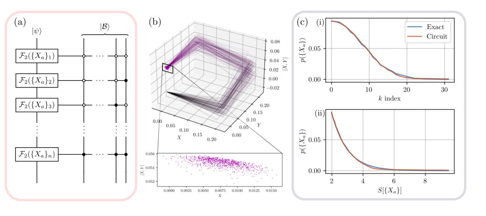
<figcaption class="paper-figure-caption"><b>Fig 4.</b> FIG. 4. Globally controlled quantum circuit and path-integral comparison. (a) Diagram of the parallel quantum circuit for sampling from the matrix path integral, as detailed in Appendix D. The Floquet sequence F2 for each matrix state {Xa} in the ensemble is conditioned on a specific element of the entangled control-qubit basis |B⟩. (b) Sample of 1000 paths through the space of effective Hamiltonians over one cycle of F2({Xa}n; ∆t) for a Gaussian distribution of perturbations. In this illustrative example, the perturbed matrix state is a 2 × 2 representation of the non-commutative sphere, given by the Pauli matrices. The distribution of path endpoints is shown, with the unperturbed endpoint...</figcaption>
</figure>
<figure class="paper-figure-card">

<figcaption class="paper-figure-caption"><b>Fig 5.</b> FIG. 5. SU(2) gauge-field observables on an expanding spacetime. Results from a Monte-Carlo simulation of a matrix state encoding an SU(2) gauge field on a k = −1 Friedmann-Lemaˆıtre-Robertson-Walker background. (a) Dispersion map ∆2( ⇀x) on a constant-time spatial slice, showing where the matrix state provides a good semiclassical representation of spacetime. The simulation uses eight 500 × 500 Hermitian matrices representing the four spacetime coordinates and their conjugate momenta. Low dispersion is confined to a finite region, reflecting the finite eigenvalue range of the matrices. By varying the time coordinate used to construct the quasi-coherent states | ⇀x⟩, the evolution of the...</figcaption>
</figure>
</div>

<p><strong>Summary.</strong> This work proposes using Floquet engineering on matrix models to simulate gauge theories on dynamically curved spacetimes. By mapping the path integral weight calculation onto measuring the fidelity of evolving random quantum states, it overcomes the limitations of fixed lattice simulations. This opens the door for simulating field and spacetime dynamics in regimes previously inaccessible to current quantum computing hardware.</p>
<p><strong>Why it may be interesting.</strong> It provides a powerful theoretical blueprint for quantum simulation that bypasses fixed lattice constraints, directly addressing fundamental problems in quantum gravity and high-energy physics relevant to open quantum systems dynamics.</p>
<details>
<summary>Detailed structure</summary>
<p><strong>Main problem.</strong> The primary challenge is simulating quantum gauge theories on dynamical spacetimes, circumventing the limitations of conventional lattice methods that require fixed backgrounds.</p>
<p><strong>Main result.</strong> The authors demonstrate a framework where the Euclidean path integral weights are reproduced by measuring the ensemble-averaged fidelities of Haar-random states evolved under periodic Floquet sequences.</p>
<p><strong>Method.</strong> A Floquet framework is introduced to map Yang-Mills matrix models onto programmable quantum platforms, using fidelity measurements (Loschmidt echo) to sample the path integral measure.</p>
<p><strong>Model / system.</strong> The system utilizes large-$N$ Hermitian matrices $\{X_a\}$ whose commutation relations encode spacetime geometry and gauge fields. This allows for modeling dynamical backgrounds like expanding cosmological spacetimes without fixed lattices.</p>
<p><strong>Key observables.</strong> Ensemble-averaged fidelity ($\langle f 
angle$), which corresponds to the Euclidean Boltzmann weight; deconfinement transition indicators (e.g., Wilson loops).</p>
<p><strong>Important parameters / regimes.</strong> The coupling constant ($g$), the matrix dimension ($N$), and the time step/frequency of the Floquet sequence ($\Delta t$ or $\omega$).</p>
<p><strong>Assumptions / limitations.</strong> The method relies on the large-$N$ limit for continuum emergence, and local observables are extracted via post-processing using quasi-coherent states.</p>
<p><strong>Figures summary.</strong> Figures illustrate mapping fields to matrix states, constructing these states via Lie algebra relations, measuring path integral weights via Floquet sequences, and extracting local observables using quasi-coherent states. Another figure compares non-commutative geometries (sphere, plane) defined by the matrices.</p>
<p><strong>Paper structure.</strong> The paper establishes the problem of dynamical spacetime simulation, introduces matrix models as an alternative to lattices, develops the Floquet protocol linking fidelity measurements to path integrals, and validates this approach by simulating known physical transitions like deconfinement on curved backgrounds.</p>
</details>
<details>
<summary>Abstract</summary>
<p>Quantum simulations of gauge theories are typically built on spatial lattices, an approach that has enabled major progress at the cost of requiring fixed background geometries and obscuring the treatment of curved and dynamical spacetimes. Large-$N$ matrix models offer an alternative, encoding spacetime geometry and gauge fields in the commutation structure of a set of Hermitian matrices, with the classical continuum emerging smoothly at large matrix dimensions. Here we introduce a Floquet framework that makes these models directly accessible to programmable quantum platforms. We show that Euclidean path integral weights of a Yang-Mills matrix models are reproduced, at leading order in the coupling, by the ensemble-averaged fidelities of Haar-random states evolved under periodic sequences of matrix operators. The observables for the simulated matrix model can then be accessed through established randomized benchmarking protocols in terms of the Loschmidt echo. The encoding requires exponentially fewer qubits than canonically quantized approaches. Numerically, we validate the fidelity-weight correspondence, demonstrate parallelized quantum circuits that sample the path-integral measure, and identify the deconfinement transition of an $SU(2)$ gauge field on both flat and expanding cosmological backgrounds. By avoiding a fixed spacetime lattice, the framework preserves continuous symmetries and unitarity on dynamical geometries, opening quantum simulation to field and spacetime dynamics beyond the reach of conventional lattice methods.</p>
</details>
<p><sub><a href="#top">↑ back to top</a></sub></p>

<p><a id="paper-2607.03799"></a></p>
<h3 id="measurement-induced-spatially-nonuniform-fluctuations-of-the-local-particle-number-and-their-crossover-in-a-quasiperiodic-free-fermion-chain"><a href="http://arxiv.org/abs/2607.03799v1">Measurement-induced spatially nonuniform fluctuations of the local particle number and their crossover in a quasiperiodic free-fermion chain</a></h3>
<p><strong>Authors:</strong> Toranosuke Matsubara, Kazuki Yamamoto<br>
<strong>Type:</strong> theory · <strong>Category:</strong> statistical mechanics · <strong>PDF:</strong> <a href="https://arxiv.org/pdf/2607.03799v1">https://arxiv.org/pdf/2607.03799v1</a><br>
<strong>Analysis basis:</strong> full PDF text, analyzed in chunks
<strong>Topic relevance:</strong> 🔥 <code>measurement-induced transitions</code> <strong>5/5</strong> · 🔥 <code>methods for driven-dissipative</code> <strong>4/5</strong> · 🔥 <code>non-equilibrium dynamics</code> <strong>4/5</strong> · 🔥 <code>quantum measurements</code> <strong>4/5</strong> · <code>driven-dissipative phase transition</code> <strong>3/5</strong> · <code>non-equilibrium universality</code> <strong>3/5</strong> · <code>Frenkel-Kontorova</code> <strong>2/5</strong> · <code>Keldysh / 2PI / non-Gaussian methods</code> <strong>2/5</strong> · <code>Kondo &amp; dissipative impurity</code> <strong>1/5</strong> · <code>analog quantum simulation</code> <strong>1/5</strong> · <code>correlated / nonlocal dissipation</code> <strong>1/5</strong> · <code>entanglement &amp; information structure</code> <strong>1/5</strong> · <code>scars &amp; prethermalization</code> <strong>1/5</strong></p>
<div class="figure-strip-hint">↔ Scroll figures horizontally</div>
<div class="paper-figures-scroll">
<figure class="paper-figure-card">
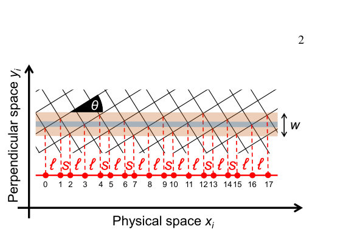
<figcaption class="paper-figure-caption"><b>Fig 1.</b> FIG. 1. The Fibonacci chain obtained by cutting and projecting a square lattice. The number below each site indicates the site index i. The coordinates xi and yi of the i-th site are for physical and perpen- dicular spaces, respectively. The width of a blue strip (two red strips) is determined by the fraction of number of sites located between two ℓ-spacings (ℓ- and s-spacings) relative to the total number of sites, where the fraction is denoted as rℓℓ(rℓs). These satisfy rℓs/rℓℓ= 2τ with rℓℓ+ rℓs = 1, which leads to the widths of the blue and red strips as rℓsw ≃1.05 and rℓℓw ≃0.32, respectively.</figcaption>
</figure>
<figure class="paper-figure-card">
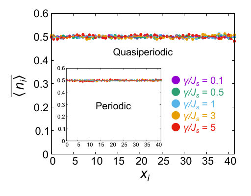
<figcaption class="paper-figure-caption"><b>Fig 2.</b> FIG. 3. Spatial distribution of the local particle number with respect to xi in physical space. We set Jℓ/Js = 0.4 in the quasiperiodic system (main panel) and Jℓ/Js = 1 in the periodic system (inset). The number of trajectories is set to 1000 for L = 60.</figcaption>
</figure>
<figure class="paper-figure-card">

<figcaption class="paper-figure-caption"><b>Fig 3.</b> FIG. 2. Numerical results for the dynamics of fluctuations of the local particle number FL/2 at the (L/2)-th site. We set (a) Jℓ/Js = 1 in the periodic system and (b) Jℓ/Js = 0.4 in the quasiperiodic system. Light, medium, and dark colors correspond to L = 30, 50, and 100, respectively. The number of quantum trajectories is set to 500.</figcaption>
</figure>
<figure class="paper-figure-card">
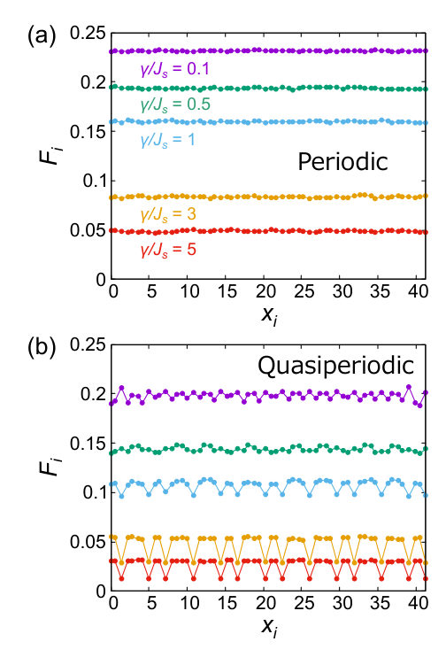
<figcaption class="paper-figure-caption"><b>Fig 4.</b> FIG. 4. Spatial distribution of fluctuations of the local particle num- ber with respect to xi in physical space. We take (a) Jℓ/Js = 1 in the periodic system and (b) Jℓ/Js = 0.4 in the quasiperiodic system. The number of trajectories is set to 1000. The system size is set to L = 120, whose enlarged view is shown.</figcaption>
</figure>
<figure class="paper-figure-card">
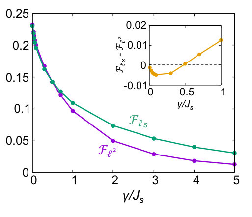
<figcaption class="paper-figure-caption"><b>Fig 5.</b> FIG. 6. Spatial average of fluctuations of the local particle number in the quasiperiodic system resolved by perpendicular space V1 n with respect to measurement strengths. The inset shows the difference Fℓs −Fℓ2 between fluctuations corresponding to two different local environments. We take L = 120 and Jℓ/Js = 0.4, and the number of trajectories is set to 1000.</figcaption>
</figure>
</div>

<p><strong>Summary.</strong> This paper examines local particle number fluctuations in a free-fermion chain built on a quasiperiodic Fibonacci lattice under continuous measurement. It demonstrates that the measurement strength controls the nature of these fluctuations, causing a crossover from patterns reflecting long-range order to those dominated by local site environments. This provides new insights into non-equilibrium physics in structured quantum matter.</p>
<p><strong>Why it may be interesting.</strong> This work directly addresses non-equilibrium physics in structured quantum systems, showing how external monitoring fundamentally alters emergent spatial correlations beyond what is predicted by unitary evolution alone.</p>
<details>
<summary>Detailed structure</summary>
<p><strong>Main problem.</strong> The study investigates how continuous quantum measurement affects local particle number fluctuations in a quasiperiodic free-fermion chain.</p>
<p><strong>Main result.</strong> Measurement induces a crossover in the spatial pattern of these fluctuations: weak measurements reveal long-range quasiperiodic order, while strong measurements localize the fluctuations to the immediate environment of each site.</p>
<p><strong>Method.</strong> The analysis employs quantum trajectory methods and Gaussian-state algorithms suitable for free fermions, analyzing both physical and perpendicular space representations.</p>
<p><strong>Model / system.</strong> The system is a free-fermion chain modeled on a Fibonacci lattice (a quasiperiodic structure), governed by a tight-binding Hamiltonian subjected to continuous monitoring.</p>
<p><strong>Key observables.</strong> Local particle number fluctuations ($F_i$), connected correlation functions, and the spatial distribution of these quantities.</p>
<p><strong>Important parameters / regimes.</strong> Measurement strength ($\gamma$) relative to system hopping amplitudes ($J_s$), which defines regimes from unitary (no measurement) to weak/strong measurement.</p>
<p><strong>Assumptions / limitations.</strong> The analysis relies on the free-fermion approximation and Gaussian-state simulation techniques.</p>
<p><strong>Figures summary.</strong> Figures illustrate the Fibonacci chain construction in physical and perpendicular spaces, showing how local particle number fluctuations vary spatially across different measurement strengths ($\gamma/J_s$).</p>
<p><strong>Paper structure.</strong> The paper progresses by defining the system (free fermions on a quasiperiodic lattice), introducing the continuous monitoring dynamics via the stochastic Schrödinger equation, and then analyzing the resulting spatial patterns of fluctuations as a function of measurement strength to demonstrate the crossover.</p>
</details>
<details>
<summary>Abstract</summary>
<p>We study continuously monitored dynamics of a quasiperiodic free-fermion chain defined on a Fibonacci lattice. We focus on fluctuations of the local particle number, which exhibit a spatially uniform distribution in the unitary limit. Remarkably, we demonstrate that they exhibit a nonuniform spatial pattern originating from the quasiperiodic long-range order under continuous measurement. Furthermore, employing both physicaland perpendicular-space analyses, we elucidate that measurement-induced crossover emerges in fluctuations due to the interplay between the incommensurate modulation and the continuous measurement. While weak measurement yields a distribution reflecting the long-range spatial structure of the quasiperiodic system, an increase in measurement strength alters the distribution into one dominated by the local environment of each site. We also elucidate that the measurement-induced crossover emerges in other physical quantities such as connected correlation functions. These findings offer insights into nonequilibrium quasiperiodic phenomena emerging in continuously monitored dynamics.</p>
</details>
<p><sub><a href="#top">↑ back to top</a></sub></p>

<p><a id="paper-2607.05190"></a></p>
<h3 id="spectral-topology-induced-criticality-in-non-hermitian-fermionic-metals"><a href="http://arxiv.org/abs/2607.05190v1">Spectral-topology-induced criticality in non-Hermitian fermionic metals</a></h3>
<p><strong>Authors:</strong> Ayan Banerjee, Julius T. Gohsrich, Flore K. Kunst<br>
<strong>Type:</strong> theory · <strong>Category:</strong> statistical mechanics · <strong>PDF:</strong> <a href="https://arxiv.org/pdf/2607.05190v1">https://arxiv.org/pdf/2607.05190v1</a><br>
<strong>Analysis basis:</strong> full PDF text, analyzed in chunks
<strong>Topic relevance:</strong> 🔥 <code>non-equilibrium universality</code> <strong>5/5</strong> · 🔥 <code>driven-dissipative phase transition</code> <strong>4/5</strong> · <code>analog quantum simulation</code> <strong>3/5</strong> · <code>correlated / nonlocal dissipation</code> <strong>3/5</strong> · <code>methods for driven-dissipative</code> <strong>3/5</strong> · <code>non-equilibrium dynamics</code> <strong>3/5</strong> · <code>Kondo &amp; dissipative impurity</code> <strong>2/5</strong> · <code>entanglement &amp; information structure</code> <strong>2/5</strong> · <code>Keldysh / 2PI / non-Gaussian methods</code> <strong>1/5</strong></p>
<div class="figure-strip-hint">↔ Scroll figures horizontally</div>
<div class="paper-figures-scroll">
<figure class="paper-figure-card">
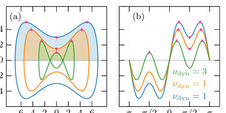
<figcaption class="paper-figure-caption"><b>Fig 1.</b> FIG. 1. Spectral topology and dynamical topological in- dex. (a) Different complex spectra (blue, orange, and green curves) for different parameters (t1 = 6, t1 = 4.5 and t1 = 2, respectively) for the Hamiltonian in Eq. (2) with l = r = 3, t−1 = 1, t±2 = 0 and t±3 = ±1. The dynamical topological index is the difference between the number of maxima and number of minima in the upper half plane, and transitions occur when these numbers change. The extrema contributing to the dynamical topological index are highlighted by pink triangles, where the up-pointing and down-pointing triangles correspond to maxima and minima, respectively. The shaded regions contribute to the non-equilibrium steady...</figcaption>
</figure>
<figure class="paper-figure-card">
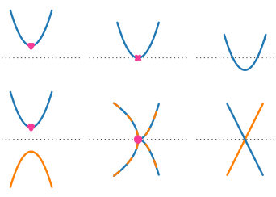
<figcaption class="paper-figure-caption"><b>Fig 2.</b> FIG. 2. Mechanisms changing the dynamical topological in- dex. The horizontal axis corresponds to k, the vertical axis to Im E(k), and the dashed horizontal line to the zero-axis Im E(k) = 0 as in Fig. 1(b). The minima contributing to the dynamical topological index are highlighted by pink down- pointing triangles. (a) Under a continuous parameter change, the minimum above zero (left) can touch the zero-axis (cen- ter), which corresponds to a non-simple zero marked by a pink cross, and can move below zero (right), increasing the dynam- ical topological index by one. In general, by tuning through a non-simple zero, the dynamical topological index can change. (b) Additionally in multi-band...</figcaption>
</figure>
<figure class="paper-figure-card">

<figcaption class="paper-figure-caption"><b>Fig 3.</b> FIG. 3. Spectral topological phase transitions and trans- port phenomena in a generalized Hatano–Nelson model. (a) Dynamical topological index νdyn and central charge ceff as function of tl for different l, showing topological phase transi- tions at distinct transition points. The green-dashed vertical lines mark the hopping strengths tl at which the dynamical topological index for the model with l = 4 changes. These lines are also present in (b,d) to highlight qualitative changes at these hopping strengths due to these phase transitions for the model with l = 4. (b) Total current as a function of tl with same l as in (a), showing the non-analytic behavior at the same parameters where the...</figcaption>
</figure>
<figure class="paper-figure-card">

<figcaption class="paper-figure-caption"><b>Fig 4.</b> FIG. 4. Correlations and entanglement entropy. The sys- tem exhibits power-law correlations ∝1/d with distinct in- terference patterns as a function of distance d, indicating a gapless critical phase and scale invariance. We quadratically interpolate between the different integer d for better visibil- ity. Inset: Corresponding entanglement entropies Sℓshowing logarithmic scaling as function of subsystem size ℓand dis- tinct central charges. We have set t±1 = 1 ± t, t±2 = ±0.2, t±3 = ∓1.9, t±4 = ±1, with t = 11 (blue), t = 6 (orange), t = 1 (green).</figcaption>
</figure>
</div>

<p><strong>Summary.</strong> The paper develops a novel topological index derived from the complex energy spectrum of non-Hermitian fermionic metals to characterize their quantum criticality. By linking algebraic topology (Morse theory) to spectral geometry, it shows that non-equilibrium phase transitions are governed by this dynamical index ($
u_{dyn}$). This provides a unified theoretical framework for understanding critical behavior in open quantum systems.</p>
<p><strong>Why it may be interesting.</strong> This work provides a powerful mathematical tool ($
u_{dyn}$) to characterize non-equilibrium quantum phases. For AMO/open systems, this connects spectral properties (which can be calculated from master equations or effective Hamiltonians) directly to universal many-body critical behavior.</p>
<details>
<summary>Detailed structure</summary>
<p><strong>Main problem.</strong> The central challenge is understanding how complex single-particle spectra govern universal many-body behavior, particularly defining quantum criticality in intrinsically out-of-equilibrium non-Hermitian systems.</p>
<p><strong>Main result.</strong> The authors establish a unified framework where non-Hermitian quantum criticality is controlled by gain-and-loss-selected non-equilibrium steady states, quantified by a dynamical topological index ($
u_{dyn}$).</p>
<p><strong>Method.</strong> They introduce and utilize a symmetry-protected dynamical topological index derived from the imaginary part of the complex single-particle spectrum, rooted in Morse theory.</p>
<p><strong>Model / system.</strong> The study focuses on non-Hermitian fermionic metals, modeled using tight-binding Hamiltonians (e.g., Hatano–Nelson or anisotropic SSH models) which are inherently out-of-equilibrium due to gain and loss terms.</p>
<p><strong>Key observables.</strong> Dynamical topological index ($
u_{dyn}$), Imaginary Fermi surface, spectral winding, gapless modes with logarithmic entanglement scaling.</p>
<p><strong>Important parameters / regimes.</strong> Hopping strengths ($t_j$), gain/loss parameters ($\gamma$), coupling constants ($\kappa$); the system's non-Hermiticity is key.</p>
<p><strong>Assumptions / limitations.</strong> The analysis often relies on simplifying assumptions such as assuming the imaginary part of energy forms a Morse function, or that the Hamiltonian remains diagonalizable for all momenta $k$.</p>
<p><strong>Figures summary.</strong> Figures illustrate spectral evolution ($   ext{Im } E(k)$) showing how $
u_{dyn}$ changes across different parameters (e.g., varying hopping strengths or gain/loss terms), marking topological phase transitions via non-simple zero crossings or Exceptional Points.</p>
<p><strong>Paper structure.</strong> The paper progresses by defining the problem in non-Hermitian systems, introducing the dynamical index ($
u_{dyn}$) via Morse theory applied to $ ext{Im } E(k)$, and then applying this framework to various concrete models (Hatano–Nelson, SSH) to demonstrate how changes in parameters induce topological phase transitions marked by changes in $
u_{dyn}$.</p>
</details>
<details>
<summary>Abstract</summary>
<p>Quantum matter emerges from the interplay of fluctuations, topology, and entanglement, which - in equilibrium - governs quantized transport, universal criticality, and topological classification. Non-Hermitian systems, widely explored in platforms ranging from electric circuits to photonics, are intrinsically out-of-equilibrium, and display fundamentally new phenomena, including complex spectra, spectral winding, exceptional topology, and non-unitary dynamics. A central challenge is understanding how the complex single-particle spectrum governs universal many-body behavior. We introduce a symmetry-protected dynamical topological index derived directly from the complex spectrum. Through the lens of algebraic topology, more specifically Morse theory, we identify critical points in the spectrum with topological defects, whose curvature and stability are protected under continuous deformations. This links spectral geometry to many-body observables, unifying non-Hermitian band topology, entanglement, and transport. We demonstrate that non-Hermitian quantum criticality in non-interacting systems is controlled by gain-and-loss-selected non-equilibrium steady states, which dynamically generate an emergent imaginary Fermi surface whose Fermi points host scale-invariant gapless modes with logarithmic entanglement scaling and algebraic correlations. Our work establishes a unified framework for non-Hermitian quantum matter, connecting spectral topology to Morse theory, revealing a topological foundation of non-equilibrium quantum criticality.</p>
</details>
<p><sub><a href="#top">↑ back to top</a></sub></p>

<p><a id="paper-2607.04279"></a></p>
<h3 id="weak-ergodicity-breaking-without-nonthermal-eigenstates"><a href="http://arxiv.org/abs/2607.04279v1">Weak ergodicity breaking without nonthermal eigenstates</a></h3>
<p><strong>Authors:</strong> Boning Huang, Yongguan Ke, Li Zhang, Lin Ling, Chaohong Lee<br>
<strong>Type:</strong> theory · <strong>Category:</strong> other · <strong>PDF:</strong> <a href="https://arxiv.org/pdf/2607.04279v1">https://arxiv.org/pdf/2607.04279v1</a><br>
<strong>Analysis basis:</strong> full PDF text, analyzed in chunks
<strong>Topic relevance:</strong> 🔥 <code>scars &amp; prethermalization</code> <strong>5/5</strong> · 🔥 <code>analog quantum simulation</code> <strong>4/5</strong> · 🔥 <code>non-equilibrium dynamics</code> <strong>4/5</strong> · <code>entanglement &amp; information structure</code> <strong>3/5</strong> · <code>non-equilibrium universality</code> <strong>3/5</strong> · <code>driven-dissipative phase transition</code> <strong>2/5</strong> · <code>Frenkel-Kontorova</code> <strong>1/5</strong> · <code>correlated / nonlocal dissipation</code> <strong>1/5</strong> · <code>correlated cavity matter</code> <strong>1/5</strong> · <code>methods for driven-dissipative</code> <strong>1/5</strong></p>
<div class="figure-strip-hint">↔ Scroll figures horizontally</div>
<div class="paper-figures-scroll">
<figure class="paper-figure-card">

<figcaption class="paper-figure-caption"><b>Fig 1.</b> FIG. 1. Schematics of (a) equally spaced energy levels in a linear band, which contribute to multiple frequencies and lead to periodic revival dynamics, and (b) random energy levels in a curved band, which contribute to random frequencies and lead to thermalization dynamics.</figcaption>
</figure>
<figure class="paper-figure-card">
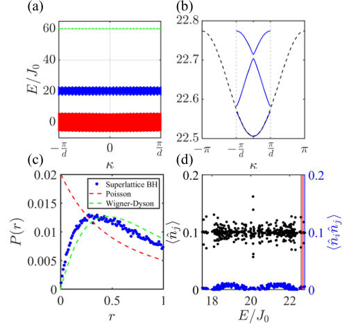
<figcaption class="paper-figure-caption"><b>Fig 2.</b> FIG. 2. (a) Three-particle Bloch bands. (b) Appearance of nearly linear sub-bands (blue solid lines), folded from the highest dimer-monomer band in the original simple lattice (black dashed line). (c) Level statistics of the superlattice Bose-Hubbard model with weak onsite disorders (blue dots). Red dashed and green dashed lines denote Poisson distribu- tion and Wigner-Dyson distribution, respectively. (d) Expec- tation values of ˆnj=15 (black) and ˆni=12ˆnj=15 (blue) of dimer- monomer eigenstates as a function of energy. Here i and j can be chosen as other sites, without changing physical picture. Values associated with a nearly linear band are highlighted by the red shaded region....</figcaption>
</figure>
<figure class="paper-figure-card">

<figcaption class="paper-figure-caption"><b>Fig 3.</b> FIG. 3. Dynamics of multiparticle Wannier states in different lattices: the superlattice (left panel) and the simple lattice (right panel). (a, b) Time-evolution of density distribution. Blue lines in (a) denote the mean displacement predicted by the group velocities of the nearly linear band. (c, d) Time- evolution of fidelity (blue) and entanglement entropy (red). Black dashed lines in (c) and (d) denote the Page value. (e, f) Normalized fast Fourier transform (FFT) spectrum of fidelity in long-time dynamics. Vertical dashed red lines denote the frequencies given by the energy gaps in corresponding band. δU = 0.01(δU = 0) is chosen for superlattice (simple) lattice, while the other...</figcaption>
</figure>
<figure class="paper-figure-card">

<figcaption class="paper-figure-caption"><b>Fig 4.</b> FIG. 4. Time-evolution of fidelity in (a) the nearly linear dimer-monomer band and (b) curved highest dimer-monomer band for different system sizes: M = 60 (top panel) and M = 90 (bottom panel). Other parameters are the same as those in Figs. 3(a, c).</figcaption>
</figure>
</div>

<p><strong>Summary.</strong> The authors propose an alternative source of weak ergodicity breaking by utilizing spectral phase coherence within engineered nearly linear energy bands. By modulating a Bose-Hubbard superlattice, they create conditions where collective revivals occur due to quasi-equally spaced energy levels, bypassing the need for exotic nonthermal eigenstates found in other localization mechanisms.</p>
<p><strong>Why it may be interesting.</strong> This work provides a concrete, controllable mechanism for observing non-trivial quantum dynamics (revivals) in interacting bosonic systems using lattice engineering, which is highly relevant to simulating complex many-body physics in cold atom setups.</p>
<details>
<summary>Detailed structure</summary>
<p><strong>Main problem.</strong> To identify a mechanism for weak ergodicity breaking in quantum many-body systems that does not rely on the presence of nonthermal eigenstates.</p>
<p><strong>Main result.</strong> Weak ergodicity breaking can occur due to spectral phase coherence among ETH-satisfying eigenstates when energy bands are engineered to have nearly equally spaced levels, leading to long-lived collective revivals.</p>
<p><strong>Method.</strong> The analysis involves studying the time evolution fidelity and entanglement entropy of maximally localized Wannier states (MWSs) in a superlattice Bose-Hubbard model.</p>
<p><strong>Model / system.</strong> The system is modeled by a spatially modulated Bose-Hubbard lattice Hamiltonian, which folds original energy bands into nearly linear sub-bands via cotranslation symmetry.</p>
<p><strong>Key observables.</strong> Time evolution fidelity, particle-partition entanglement entropy, and the Fourier transform spectrum of the revival dynamics.</p>
<p><strong>Important parameters / regimes.</strong> Superlattice modulation strength ($\delta U$), system size ($M$), and interaction/hopping parameters ($J_0, U_0$).</p>
<p><strong>Assumptions / limitations.</strong> The mechanism relies on MWSs remaining confined within a single band sector (band-resolved fragmentation).</p>
<p><strong>Figures summary.</strong> Figures compare periodic revival dynamics in nearly linear bands versus thermalization dynamics in curved bands; time evolution plots show revivals for the superlattice case but loss of coherence in simple lattices.</p>
<p><strong>Paper structure.</strong> The paper develops the theory by first establishing the model and mechanism, then analyzing energy band structure via modulation, followed by detailed time-evolution diagnostics (fidelity, entanglement) to distinguish coherent revival from thermalization or finite-size effects across various particle sectors.</p>
</details>
<details>
<summary>Abstract</summary>
<p>The typical mechanisms of ergodicity breaking in isolated interacting quantum systems, such as many-body localization and quantum many-body scars, originate from the nonthermal nature of the underlying eigenstates. Here, in the absence of nonthermal eigenstates, we identify a mechanism for collective revivals of multiparticle Wannier states (MWSs) associated with nearly linear bands in a spatially modulated Bose-Hubbard lattice. The MWSs, as superpositions of multiparticle Bloch states within individual energy bands, give rise to band-resolved Wannier-sector fragmentation. The key idea is that spatially periodic modulation folds and separates energy bands of a simple lattice into several sub-bands, among which nearly linear sub-bands inherit the linear segments of the original bands. Although multiparticle Bloch states satisfy the eigenstate thermalization hypothesis (ETH), the MWSs in the nearly linear band still exhibit long-lived collective revivals, due to emergent equally spaced energy levels. Our work provides a route to weak ergodicity breaking in which long-lived revivals arise from spectral phase coherence among ETH-satisfying eigenstates rather than from scar-like nonthermal eigenstates.</p>
</details>
<p><sub><a href="#top">↑ back to top</a></sub></p>

<p><a id="paper-2607.04864"></a></p>
<h3 id="emergence-of-the-scrooge-ensemble-in-the-sachdev-ye-kitaev-model"><a href="http://arxiv.org/abs/2607.04864v1">Emergence of the Scrooge Ensemble in the Sachdev-Ye-Kitaev Model</a></h3>
<p><strong>Authors:</strong> Zeyu Liu, Pengfei Zhang<br>
<strong>Type:</strong> theory · <strong>Category:</strong> statistical mechanics · <strong>PDF:</strong> <a href="https://arxiv.org/pdf/2607.04864v1">https://arxiv.org/pdf/2607.04864v1</a><br>
<strong>Analysis basis:</strong> full PDF text, analyzed in chunks
<strong>Topic relevance:</strong> 🔥 <code>quantum measurements</code> <strong>5/5</strong> · 🔥 <code>measurement-induced transitions</code> <strong>4/5</strong> · <code>entanglement &amp; information structure</code> <strong>3/5</strong> · <code>non-equilibrium dynamics</code> <strong>3/5</strong> · <code>Keldysh / 2PI / non-Gaussian methods</code> <strong>2/5</strong> · <code>non-equilibrium universality</code> <strong>2/5</strong> · <code>correlated / nonlocal dissipation</code> <strong>1/5</strong> · <code>driven-dissipative phase transition</code> <strong>1/5</strong> · <code>methods for driven-dissipative</code> <strong>1/5</strong> · <code>scars &amp; prethermalization</code> <strong>1/5</strong></p>
<div class="figure-strip-hint">↔ Scroll figures horizontally</div>
<div class="paper-figures-scroll">
<figure class="paper-figure-card">

<figcaption class="paper-figure-caption"><b>Fig 1.</b> FIG. 1. Schematic illustration of the main setup. The sys- tem is initialized in a thermofield double state of N pairs of Majorana fermions, denoted by the blue and red circles. Af- ter time evolution, projective measurements are performed on most pairs of Majorana fermions, yielding outcomes m and a post-measurement state |ψm⟩A. We analyze the distribution p(λ) of measurement outcomes with λN entries of +1, as well as the projected ensemble {pmpJ, |ψm⟩A}, where pJ is the distribution of random couplings.</figcaption>
</figure>
<figure class="paper-figure-card">

<figcaption class="paper-figure-caption"><b>Fig 2.</b> FIG. 2. (a) Path-integral representation of the measure- ment probability pm, where the system B is divided into B+ and B−according to the measurement outcomes. f/b denotes the forward/backward evolution branches. (b) Path-integral representation of the unnormalized post-measurement density matrix ˜ρm for subsystem A. (c) Illustration of the two-replica calculation. Here, the colored shaded regions denote the path integral of subsystem B, while the gray shaded region indi- cates the connectivity of the saddle-point solution.</figcaption>
</figure>
<figure class="paper-figure-card">

<figcaption class="paper-figure-caption"><b>Fig 3.</b> FIG. 3. Numerical results for the measurement probability and participation entropy. (a) Two saddle-point solutions of GB+ for βJ = Jt = 2 and λ = 0.82. (b) Probability density p(λ) for different values of Jt for βJ = 2. (c) The most proba- ble measurement fraction λ∗and the participation entropy S1 as functions of the evolution time t for βJ = 2, 4 [71]. Dashed lines correspond to S1, and solid lines correspond to λ∗.</figcaption>
</figure>
<figure class="paper-figure-card">

<figcaption class="paper-figure-caption"><b>Fig 4.</b> FIG. 4. Saddle-point solutions of GB+ for βJ = Jt = 2 and λ = 0.82. We show two representative solutions correspond- ing to the two distinct pairing patterns illustrated in Fig. 2(c). From each representative solution, three additional solutions can be obtained by flipping the signs of the interbranch cou- plings indicated by the yellow and/or purple squares. We denote the forward/backward evolution branch of the r-th replica by f/br. In (a), the pairing pattern is (f1, b1) and (f2, b2), while in (b), it is (f1, b2) and (f2, b1).</figcaption>
</figure>
<figure class="paper-figure-card">
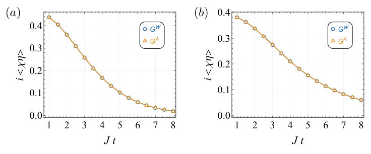
<figcaption class="paper-figure-caption"><b>Fig 5.</b> FIG. 1. Numerical verification of the reduced density matrix from the projected ensemble. Here, we choose βJ = 2 and βJ = 4 for panels (a) and (b), respectively.</figcaption>
</figure>
</div>

<p><strong>Summary.</strong> This paper uses the analytically tractable Sachdev-Ye-Kitaev (SYK) model to investigate deep thermalization following partial quantum measurement. By employing path integrals and saddle-point techniques, the authors rigorously demonstrate that the statistical distribution of post-measurement states converges exactly to the maximally random Scrooge ensemble. This establishes the SYK model as a key theoretical tool for understanding universal statistics in chaotic many-body dynamics.</p>
<p><strong>Why it may be interesting.</strong> This work provides a concrete, solvable model (SYK) to study universal statistical features arising from quantum measurements, which is highly relevant for understanding thermalization in complex quantum systems beyond standard equilibrium approaches.</p>
<details>
<summary>Detailed structure</summary>
<p><strong>Main problem.</strong> The study investigates deep thermalization, specifically characterizing the statistical structure of post-measurement states when only a subsystem of a many-body system is measured.</p>
<p><strong>Main result.</strong> The authors analytically prove that the moments of the projected ensemble in the SYK model exactly match those of the Scrooge ensemble, even at short evolution times.</p>
<p><strong>Method.</strong> The analysis employs path integrals to formulate measurement probabilities and post-measurement states, followed by calculating all ensemble moments using saddle-point approximations.</p>
<p><strong>Model / system.</strong> The system studied is the Sachdev-Ye-Kitaev (SYK) model, which serves as a solvable platform for analyzing quantum measurements in chaotic many-body dynamics. The Hamiltonian involves random couplings between Majorana fermions.</p>
<p><strong>Key observables.</strong> Measurement probability ($p_m$), projected ensemble ($\{p_m, |\psi_m
angle_A\}$), Shannon participation entropy ($S_1$), and the reduced density matrix ($
ho_A$).</p>
<p><strong>Important parameters / regimes.</strong> Time evolution $t$, coupling strength $J$, system size $N$, and the measurement fraction $\lambda$.</p>
<p><strong>Assumptions / limitations.</strong> The analysis relies on the solvability of the SYK model, using path integrals and saddle-point approximations to calculate ensemble moments.</p>
<p><strong>Figures summary.</strong> Figures illustrate the setup (TFD state $
ightarrow$ Evolution $
ightarrow$ Measurement), path-integral representations for probabilities and density matrices, and numerical results showing how participation entropy saturates to a maximum value over time.</p>
<p><strong>Paper structure.</strong> The paper progresses from defining the measurement process via path integrals on the SYK model, deriving saddle-point equations for the partition function ($Z_m$), calculating diagnostics like participation entropy, and finally establishing the match between the projected ensemble moments and the theoretical Scrooge ensemble statistics.</p>
</details>
<details>
<summary>Abstract</summary>
<p>The probabilistic nature of quantum measurement provides a direct window into the structure and complexity of many-body wave functions. When only part of a system is measured, the remaining degrees of freedom form an ensemble of post-measurement states whose statistical structure can reveal a stronger form of thermalization, known as deep thermalization. Recent numerical evidence suggests that this phenomenon is characterized by convergence of the projected ensemble to the Scrooge ensemble, a maximally random ensemble compatible with a given density matrix. In this Letter, we use the solvable Sachdev-Ye-Kitaev (SYK) model to unveil the mechanism by which the Scrooge ensemble emerges in many-body systems. By formulating measurement probabilities and post-measurement states in terms of path integrals, we analytically characterize all moments of the projected ensemble and show that they exactly match those of the Scrooge ensemble, even at short evolution times. We further connect this result to the saddle-point structure of the measurement path integral, which naturally generates the replica permutations underlying Scrooge statistics. Our results establish the solvable SYK model as a tractable setting for exploring universal statistics of quantum measurements in chaotic many-body dynamics.</p>
</details>
<p><sub><a href="#top">↑ back to top</a></sub></p>

<p><a id="paper-2607.03535"></a></p>
<h3 id="thermalization-hierarchy-from-irreducible-degrees-of-freedom"><a href="http://arxiv.org/abs/2607.03535v1">Thermalization hierarchy from irreducible degrees of freedom</a></h3>
<p><strong>Authors:</strong> Pedro Fittipaldi de Castro, Wladimir A. Benalcazar<br>
<strong>Type:</strong> theory · <strong>Category:</strong> statistical mechanics · <strong>PDF:</strong> <a href="https://arxiv.org/pdf/2607.03535v1">https://arxiv.org/pdf/2607.03535v1</a><br>
<strong>Analysis basis:</strong> full PDF text, analyzed in chunks
<strong>Topic relevance:</strong> 🔥 <code>scars &amp; prethermalization</code> <strong>5/5</strong> · 🔥 <code>entanglement &amp; information structure</code> <strong>4/5</strong> · 🔥 <code>non-equilibrium dynamics</code> <strong>4/5</strong> · <code>non-equilibrium universality</code> <strong>3/5</strong> · <code>analog quantum simulation</code> <strong>2/5</strong> · <code>Keldysh / 2PI / non-Gaussian methods</code> <strong>1/5</strong> · <code>correlated / nonlocal dissipation</code> <strong>1/5</strong> · <code>driven-dissipative phase transition</code> <strong>1/5</strong> · <code>methods for driven-dissipative</code> <strong>1/5</strong></p>
<div class="figure-strip-hint">↔ Scroll figures horizontally</div>
<div class="paper-figures-scroll">
<figure class="paper-figure-card">

<figcaption class="paper-figure-caption"><b>Fig 1.</b> FIG. 1: Thermalization hierarchy. (a) Decomposition of the Hamiltonian (1) in the basis (5), showing dynamically isolated subspaces as diagonal blocks. Half-chain entanglement entropy of the eigenstates of (b) the local, translation invariant Hamiltonian (55) with κ = 2.5 and of (c) the nonlocal, disordered Hamiltonian (60) with κ = 0.02. Calculations done under periodic boundary conditions with parameters J1 = J2 = J3 = 1, and B = 8. Energies are shown relative to E0 of the ferromagnetic state |↑, ↑, . . . , ↑⟩.</figcaption>
</figure>
<figure class="paper-figure-card">

<figcaption class="paper-figure-caption"><b>Fig 2.</b> FIG. 2: Permutation irreps as Young diagrams. (a) Dia- gram corresponding to the (2, 1) irrep of S3. (b) and (c) are its two Young tableaux, which yield a two-dimensional irrep.</figcaption>
</figure>
<figure class="paper-figure-card">

<figcaption class="paper-figure-caption"><b>Fig 3.</b> FIG. 3: (a) Dimensions Dn (dn) of the bond (commutant) algebra irreps as well as the dimension Dndn of the total spin sector versus n = L/2 −S for L = 16. Half-chain entanglement entropy SE averaged over all energy eigenstates of (10) with a given n and its comparison with the logarithm of (b) the bond-irrep dimensions Dn and (c) the spin sector dimensions Dndn.</figcaption>
</figure>
<figure class="paper-figure-card">
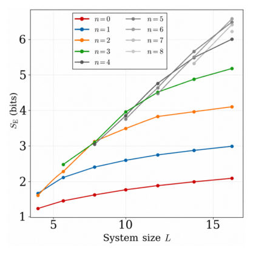
<figcaption class="paper-figure-caption"><b>Fig 4.</b> FIG. 4: Scaling of the half-chain entanglement entropy SE averaged over eigenstates of the Hamiltonian (10) with fixed n IDOF.</figcaption>
</figure>
</div>

<p><strong>Summary.</strong> The paper introduces a 'thermalization hierarchy' by decomposing the Hilbert space using bond and commutant algebras, providing a finer structure than simple symmetry analysis. It shows that the dimension of these bond irreps ($D_{\lambda}$) controls thermalization continuously, mapping low $D_{\lambda}$ to scars and high $D_{\lambda}$ to ergodic behavior. This framework provides a microscopic interpretation via 'Irreducible Degrees of Freedom' (IDOF) for understanding quantum dynamics.</p>
<p><strong>Why it may be interesting.</strong> This work offers a powerful algebraic tool (bond algebras) to classify and quantify the transition between integrable/scarred dynamics and thermal behavior in quantum many-body systems, highly relevant for understanding out-of-equilibrium physics.</p>
<details>
<summary>Detailed structure</summary>
<p><strong>Main problem.</strong> To establish a refined 'thermalization hierarchy' that describes how quantum many-body systems approach thermal equilibrium, moving beyond simple symmetry sector analysis.</p>
<p><strong>Main result.</strong> The degree of thermalization is quantitatively controlled by the dimension of the bond algebra irreducible representation ($D_{\lambda}$), creating a continuous spectrum from non-thermal scars to ergodic states.</p>
<p><strong>Method.</strong> The authors use algebraic decomposition based on the bond and commutant algebras ($\mathcal{A}_{	ext{bond}}$ and $\mathcal{A}_{	ext{comm}}$) to partition the Hilbert space into dynamically isolated subspaces.</p>
<p><strong>Model / system.</strong> The analysis uses SU(2)-symmetric spin-1/2 chains as a paradigmatic model, analyzing its Hamiltonian structure via algebraic decomposition techniques derived from Schur-Weyl duality.</p>
<p><strong>Key observables.</strong> Average eigenstate entanglement entropy ($S_E$), the dimension of bond irreps ($D_{\lambda}$), and Irreducible Degrees of Freedom (IDOF).</p>
<p><strong>Important parameters / regimes.</strong> The IDOF, which is quantified by $\log D_{\lambda}$, acts as the continuous control parameter interpolating between different thermalization regimes.</p>
<p><strong>Assumptions / limitations.</strong> The analysis assumes that the Hilbert space can be decomposed according to the irreducible representations of the bond and commutant algebras.</p>
<p><strong>Figures summary.</strong> Figures illustrate the thermalization hierarchy based on $\mathcal{A}_{	ext{bond}}$ irreps, showing entanglement entropy dependence on parameters ($\kappa$), and comparing $\log D_n$ with half-chain entanglement entropy for different Hamiltonians.</p>
<p><strong>Paper structure.</strong> The paper first introduces the algebraic framework using bond/commutant algebras to refine thermalization understanding. It then uses SU(2) spin chains as an example, relating $D_{\lambda}$ to entanglement entropy and IDOF. Finally, it provides a constructive method for embedding non-thermal states into ergodic spectra.</p>
</details>
<details>
<summary>Abstract</summary>
<p>The decomposition of the Hilbert space of a quantum many-body system into the irreducible representations of its bond and commutant algebras yields a finer structure of dynamically isolated subspaces than the mere decomposition into symmetry sectors. While it has been recognized that subspaces associated with low bond-irrep dimensions $D_λ$ tend to violate the eigenstate thermalization hypothesis (ETH), here we show that $D_λ$ controls thermalization continuously across the full spectrum of dynamical subspaces. Using SU(2)-symmetric spin-1/2 chains as a paradigmatic example, we demonstrate that $\mathrm{log} \ D_λ$ quantitatively accounts for the average eigenstate entanglement entropy within each sector, establishing a thermalization hierarchy that interpolates from exact quantum many-body scars at $D_λ=1$ to volume-law ergodic states at large $D_λ$. To make this concrete, we introduce the notion of irreducible degrees of freedom (IDOF), defined as the number of independently-varying spatial coordinates parametrizing a many-body state within a given bond-algebra sector, which provides a microscopic interpretation of $D_λ$ and of the resulting thermalization hierarchy. Finally, we show that by selectively breaking symmetries while preserving chosen bond-algebra sectors, one can embed families of nonthermal eigenstates at prescribed entanglement levels into an otherwise ergodic spectrum, generalizing restricted spectrum-generating algebras from towers of individual states to entire dynamical subspaces.</p>
</details>
<p><sub><a href="#top">↑ back to top</a></sub></p>

<p><a id="paper-2607.05130"></a></p>
<h3 id="critical-behavior-of-the-driven-curie-weiss-model"><a href="http://arxiv.org/abs/2607.05130v1">Critical behavior of the driven Curie-Weiss model</a></h3>
<p><strong>Authors:</strong> Ruohan Xu, Faezeh Khodabandehlou, Christian Maes<br>
<strong>Type:</strong> theory · <strong>Category:</strong> statistical mechanics · <strong>PDF:</strong> <a href="https://arxiv.org/pdf/2607.05130v1">https://arxiv.org/pdf/2607.05130v1</a><br>
<strong>Analysis basis:</strong> full PDF text, analyzed in chunks
<strong>Topic relevance:</strong> 🔥 <code>non-equilibrium universality</code> <strong>5/5</strong> · 🔥 <code>driven-dissipative phase transition</code> <strong>4/5</strong> · <code>methods for driven-dissipative</code> <strong>3/5</strong> · <code>non-equilibrium dynamics</code> <strong>3/5</strong> · <code>Keldysh / 2PI / non-Gaussian methods</code> <strong>1/5</strong> · <code>analog quantum simulation</code> <strong>1/5</strong> · <code>correlated / nonlocal dissipation</code> <strong>1/5</strong></p>
<div class="figure-strip-hint">↔ Scroll figures horizontally</div>
<div class="paper-figures-scroll">
<figure class="paper-figure-card">

<figcaption class="paper-figure-caption"><b>Fig 1.</b> FIG. 1: Specific heat as a function of inverse temperature β for different values of A and ω. (a)</figcaption>
</figure>
<figure class="paper-figure-card">
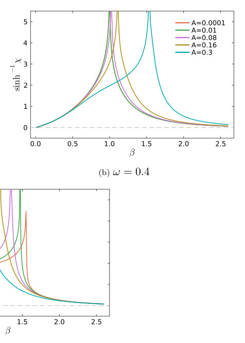
<figcaption class="paper-figure-caption"><b>Fig 2.</b> FIG. 2: sinh−1 χ as function of β, for different values of A and ω.</figcaption>
</figure>
<figure class="paper-figure-card">

<figcaption class="paper-figure-caption"><b>Fig 3.</b> FIG. 3: Critical behavior of the specific heat for different values of A and ω in the vicinity of βc.</figcaption>
</figure>
<figure class="paper-figure-card">

<figcaption class="paper-figure-caption"><b>Fig 4.</b> FIG. 4: Critical behavior of χ for A = 0.1 and ω = 0.3. The time t is that of averaging as multiple</figcaption>
</figure>
<figure class="paper-figure-card">
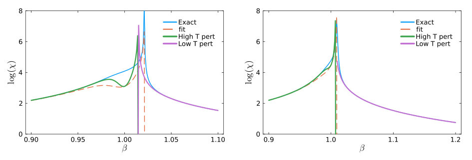
<figcaption class="paper-figure-caption"><b>Fig 5.</b> FIG. 5: Critical behavior of χ, predicted by formula (III.2), high-temperature approximation (III.1)</figcaption>
</figure>
</div>

<p><strong>Summary.</strong> This paper investigates the non-equilibrium critical behavior of the Curie-Weiss magnet under periodic external driving. By analyzing observables like specific heat and susceptibility using mean-field theory, the authors map out a complex phase diagram showing coexistence regions. The findings highlight how driving fundamentally alters critical exponents and introduces dynamics unseen in equilibrium thermodynamics.</p>
<p><strong>Why it may be interesting.</strong> This work provides a detailed theoretical framework for understanding non-equilibrium critical phenomena in classical magnetic models, which has direct analogies to driven quantum systems where thermal equilibrium assumptions break down.</p>
<details>
<summary>Detailed structure</summary>
<p><strong>Main problem.</strong> The study focuses on completing the phase diagram and analyzing the critical behavior of a macroscopic Curie-Weiss magnet when subjected to a time-periodic external driving field.</p>
<p><strong>Main result.</strong> The system exhibits coexisting paramagnetic and ferromagnetic phases in certain driven regimes, and the specific heat shows divergences with different critical exponents ($\alpha=1$ vs $\alpha\simeq 0.86$) depending on whether the temperature is approached from above or below criticality.</p>
<p><strong>Method.</strong> The analysis employs mean-field theory combined with non-equilibrium calorimetry techniques, involving linear response theory and perturbative expansions around the driven steady state.</p>
<p><strong>Model / system.</strong> The model is the Curie-Weiss magnet described by a Hamiltonian subjected to a time-dependent field $h_0(t) = \delta_0 + A_0 \cos(\omega t)$. The dynamics are analyzed in the macroscopic limit using relaxation equations for magnetization.</p>
<p><strong>Key observables.</strong> Specific heat ($C$), magnetic susceptibility ($\chi$), and the average magnetization $\langle m 
angle$.</p>
<p><strong>Important parameters / regimes.</strong> Temperature ($eta$), driving amplitude ($A$), and frequency ($\omega$). Criticality is studied across regimes defined by these parameters.</p>
<p><strong>Assumptions / limitations.</strong> The analysis often relies on approximations such as the near-quasistatic ansatz for small modulation frequencies, or perturbative expansions in the driving amplitude $A$.</p>
<p><strong>Figures summary.</strong> Figures illustrate specific heat divergence at $eta_c$ for various driving strengths; they also show phase coexistence regions and compare critical exponents derived from both $C$ and $\chi$.</p>
<p><strong>Paper structure.</strong> The paper systematically develops the mean-field description, applies linear response theory to calculate observables like susceptibility, and analyzes the resulting equations by examining different parameter regimes (e.g., weak vs. strong driving) to map out the phase diagram.</p>
</details>
<details>
<summary>Abstract</summary>
<p>We complete the phase diagram of the macroscopic Curie-Weiss magnet in a time-periodic external field, as a function of temperature and driving parameters. There is a regime (large enough driving amplitude and frequency, at low temperatures) where stable paramagnetic and ferromagnetic phases coexist. In particular, we present a new detailed analysis of the (nonequilibrium) specific heat, diverging at the same critical inverse temperature $β_c$ as the magnetic susceptibility. The new Curie temperature decreases with the driving, and we find critical exponent $α=1$ for $β\downarrow β_c$, and $α\simeq 0.86$ for $β\uparrow β_c$, even for small driving. A Floquet analysis shows the nature of the criticality, which is dynamical, with implications that remain unseen and are mostly impossible when the system is in thermal equilibrium.</p>
</details>
<p><sub><a href="#top">↑ back to top</a></sub></p>

<p><a id="paper-2607.05216"></a></p>
<h3 id="fast-pulses-for-high-fidelity-circularization-of-interacting-rydberg-atoms"><a href="http://arxiv.org/abs/2607.05216v1">Fast Pulses for High-Fidelity Circularization of Interacting Rydberg atoms</a></h3>
<p><strong>Authors:</strong> Matthias Hüls, Aurore A. Young, Clément Sayrin, Michel Brune, Jean-Michel Raimond, Tommaso Calarco, Felix Motzoi, Robert Zeier, Eloisa Cuestas<br>
<strong>Type:</strong> theory · <strong>Category:</strong> other · <strong>PDF:</strong> <a href="https://arxiv.org/pdf/2607.05216v1">https://arxiv.org/pdf/2607.05216v1</a><br>
<strong>Analysis basis:</strong> full PDF text, analyzed in chunks
<strong>Topic relevance:</strong> 🔥 <code>Rydberg arrays</code> <strong>5/5</strong> · 🔥 <code>analog quantum simulation</code> <strong>4/5</strong> · <code>methods for driven-dissipative</code> <strong>3/5</strong> · <code>non-equilibrium dynamics</code> <strong>2/5</strong> · <code>Keldysh / 2PI / non-Gaussian methods</code> <strong>1/5</strong> · <code>entanglement &amp; information structure</code> <strong>1/5</strong> · <code>quantum measurements</code> <strong>1/5</strong></p>
<div class="figure-strip-hint">↔ Scroll figures horizontally</div>
<div class="paper-figures-scroll">
<figure class="paper-figure-card">

<figcaption class="paper-figure-caption"><b>Fig 1.</b> FIG. 1. (a) Rydberg levels of the n = 52 manifold of 1H (dashed gray lines) and 87Rb (solid black lines) in the presence of static electric and magnetic fields of magnitude E = 2.1 V cm−1 and B = 14 G. The eigenenergies ordered by their corresponding magnetic quantum number m reveal the diamond-like pattern depicted in the inset. For hydrogen the subspace of the energeti- cally lowest states with m ≥0 forms the lowest diagonal ladder (shaded turquoise) that includes the circular state |52C⟩(red). The lowest diagonal ladder is harmonic up to the dominant first order Stark shift with transitions m →m + 1 (blue arrows) of 229.2 MHz usually driven by a σ+ polarized RF field. The m = 0 and m = 1...</figcaption>
</figure>
<figure class="paper-figure-card">
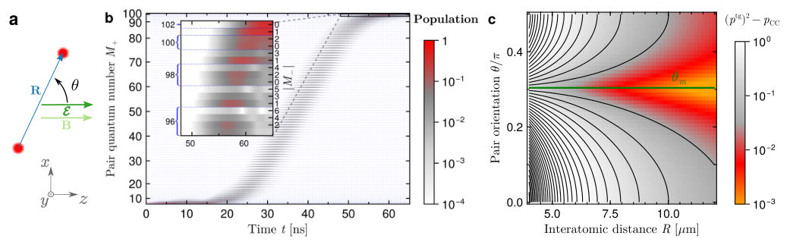
<figcaption class="paper-figure-caption"><b>Fig 2.</b> FIG. 2. (a) A pair of Rydberg atoms with interatomic distance R and angle θ with respect to the static electric and magnetic fields E and B. (b) Angular momentum transfer for an interacting atom pair with R = 7 µm and θ = 0 under the action of the RF pulse optimized for the circulrization of a single atom shown in Fig. 1(b). The field magnitudes are set to E = 2.1 V cm−1</figcaption>
</figure>
<figure class="paper-figure-card">
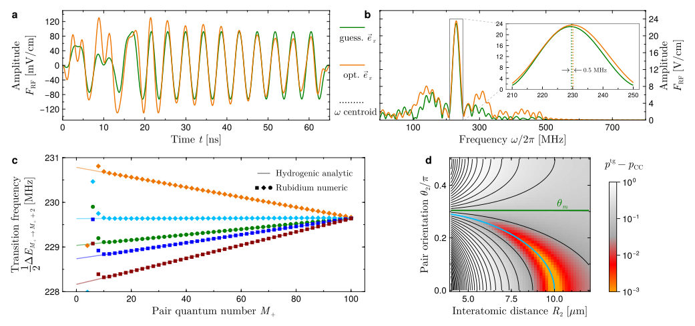
<figcaption class="paper-figure-caption"><b>Fig 3.</b> FIG. 3. Main mechanism through which the interactions disturb the circularization. (a-b) Comparison between the RF pulse optimized for the circularization of a single atom (green) with a pulse optimized for the simultaneous circularization of a pair of atoms (orange) with R = 7 µm and θ = 0, targeting in both cases to an efficiency ptg = 99%. The static electric and magnetic field have magnitudes E = 2.1 V cm−1 and B = 14 G. Panel (a) depicts the x-component of both pulses (y-components exhibit similar behavior) while panel (b) shows the corresponding spectral analysis. The Fourier transform of the pulse optimized for the circularization of a single atom exhibits a dominant peak around the...</figcaption>
</figure>
<figure class="paper-figure-card">
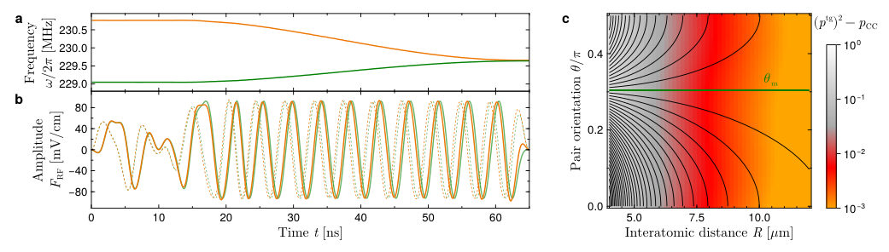
<figcaption class="paper-figure-caption"><b>Fig 4.</b> FIG. 4. Analytical adaptation of the single-atom pulse to two interacting atoms. (a) Frequencies associated to the transitions supported by the lowest diagonal ladders for two non-interacting (green) and interacting (orange) hydrogenic atoms. (b) x− and y−components (solid and dashed orange curves, respectively) of the analytical adapted pulse Faa ad. freq. for interacting atoms obtained by incorporating into Fa Krotov (in green) a phase shift that counteracts the main effect of interactions, see Eq. (5.1). The resulting adapted pulse leads to pCC = 96.9 % for R = 7 µm and θ = 0. (c) Differences between the maximum achievable final circular pair probability of (ptg)2 = 98% and the one...</figcaption>
</figure>
<figure class="paper-figure-card">

<figcaption class="paper-figure-caption"><b>Fig 5.</b> FIG. 5. Final circular pair state probability pCC obtained after the evolution of an atom pair under the action of different pulses (a) as a function of the interatomic distancde R for a fixed angle θ = 0 and pulse duration tf = 65 ns, (b) as a function of θ for a fixed R = 7 µm and tf = 65 ns, and (c) as a function of tf for fixed R = 7 µm and θ = 0. The dotted vertical lines in each panel indicate the value to which the corresponding parameter is fixed in the remaining panels. As expected, the optimized single-atom pulse of Fig. 1(b) (green) results in high values of pCC around θm and for large R. The optimized single-atom pulse is then adapted to the interactions as indicated by Eq....</figcaption>
</figure>
</div>

<p><strong>Summary.</strong> This paper tackles the challenge of rapidly preparing highly entangled circular states in interacting Rydberg atoms. The authors show that by analytically adapting single-atom pulse sequences to account for interaction-induced energy shifts, they can achieve high fidelity preparation even when atoms are closely spaced. This breakthrough paves the way for using these systems in practical quantum simulation and computation.</p>
<p><strong>Why it may be interesting.</strong> This work directly addresses a critical technological hurdle in Rydberg quantum simulation platforms—the speed of state preparation—by providing a robust theoretical framework to incorporate many-body interactions into fast pulse design.</p>
<details>
<summary>Detailed structure</summary>
<p><strong>Main problem.</strong> Circularization of interacting Rydberg atoms is a major bottleneck for quantum computation and simulation, as previous fast methods neglected crucial interatomic interactions.</p>
<p><strong>Main result.</strong> The authors developed an adapted pulse sequence that achieves high-fidelity circularization ($\ge 95\%$) for two interacting $^{87}	ext{Rb}$ atoms at distances down to $6.5 \mu	ext{m}$, significantly speeding up the process.</p>
<p><strong>Method.</strong> They analytically derived a functional form to adapt single-atom pulse optimization techniques (like Krotov's algorithm) by accounting for interaction-induced shifts in transition energies.</p>
<p><strong>Model / system.</strong> The system involves interacting Rydberg atoms, modeled using a Hamiltonian incorporating free evolution, static electric/magnetic fields, and the dipole-dipole interaction ($\hat{H}_{	ext{int}}$). The focus is on preparing circular states in the $n=52$ manifold of $^{87}	ext{Rb}$.</p>
<p><strong>Key observables.</strong> Final circular state probability ($p_C$), fidelity ($\ge 95\%$), and angular momentum transfer $\langle\hat{L}_z
angle$.</p>
<p><strong>Important parameters / regimes.</strong> Interatomic distances down to $6.5 \mu	ext{m}$; target speedup factor of $\sim 60$ over adiabatic passage.</p>
<p><strong>Assumptions / limitations.</strong> The dominant disturbance from interactions is modeled as shifts in transition energies, allowing for an analytical adaptation of single-atom pulses; retardation effects are neglected for the interaction term.</p>
<p><strong>Figures summary.</strong> Figures illustrate Rydberg level structures under static fields and show the optimized RF pulse components and population evolution demonstrating angular momentum transfer in both single-atom and interacting pair scenarios.</p>
<p><strong>Paper structure.</strong> The work first establishes the bottleneck of circularization, then analyzes how interactions perturb single-atom pulses by identifying energy shifts. The core contribution is presenting an analytical adaptation method based on these shifts, which is validated for two atoms and extended using Krotov's algorithm for general pairs.</p>
</details>
<details>
<summary>Abstract</summary>
<p>Circular states in Rydberg atoms offer a promising platform for quantum computation, quantum simulation and quantum sensing. However, the final step of their preparation - termed as circularization, a process that involves the transfer of a large amount of angular momentum quanta to the valence electron by means of radio-frequency (RF) pulses - remains as a major bottleneck for all technological applications based on interacting circular Rydberg atoms. Even though successfully implemented to circularize an atom cloud in the dilute regime, previous efforts to speed up the circularization process have focused on the single-atom case, thereby neglecting the interactions which constitute one of the main resources for quantum simulation and computation. In this theoretical work we show how interactions between two atoms disturb the efficiency of pulses designed for single atoms and identify shifts induced by the interactions on relevant transition energies as the dominant disturbance. We demonstrate that the initial efficiency of single-atom pulses can be restored by adapting them to these shifts. Our approach is based on a simple functional form depending only on two linear parameters, which we derive analytically. The adapted pulses prepare two $^{87}$Rb atoms after $65 \,$ns in a $n=52$ circular state with a fidelity of at least $95\,\%$ for interatomic distances down to $6.5\,μ$m and for all angular configurations, while also complying experimental amplitude and frequency constraints. Finally, we show that when combining our adapted pulses with Krotov's pulse-shaping algorithm we obtain high-fidelity pulses for any pair arrangement with interatomic distances larger than $5.9\,μ$m. This work demonstrates that fast RF pulses can circularize interacting Rydberg atoms, paving the way toward their technological application.</p>
</details>
<p><sub><a href="#top">↑ back to top</a></sub></p>

<p><a id="paper-2607.04991"></a></p>
<h3 id="quantum-hashing-via-constrained-rydberg-many-body-dynamics"><a href="http://arxiv.org/abs/2607.04991v1">Quantum Hashing via Constrained Rydberg Many-Body Dynamics</a></h3>
<p><strong>Authors:</strong> Han-Chao Chen, Xin Liu, Zheng-Yuan Zhang, Dong-Sheng Ding, Bao-Sen Shi<br>
<strong>Type:</strong> theory · <strong>Category:</strong> other · <strong>PDF:</strong> <a href="https://arxiv.org/pdf/2607.04991v1">https://arxiv.org/pdf/2607.04991v1</a><br>
<strong>Analysis basis:</strong> full PDF text, analyzed in chunks
<strong>Topic relevance:</strong> 🔥 <code>Rydberg arrays</code> <strong>5/5</strong> · 🔥 <code>analog quantum simulation</code> <strong>4/5</strong> · <code>entanglement &amp; information structure</code> <strong>2/5</strong> · <code>non-equilibrium dynamics</code> <strong>2/5</strong> · <code>Tavis-Cummings &amp; cavity-many-emitter</code> <strong>1/5</strong> · <code>correlated cavity matter</code> <strong>1/5</strong> · <code>driven-dissipative phase transition</code> <strong>1/5</strong> · <code>methods for driven-dissipative</code> <strong>1/5</strong></p>
<div class="figure-strip-hint">↔ Scroll figures horizontally</div>
<div class="paper-figures-scroll">
<figure class="paper-figure-card">
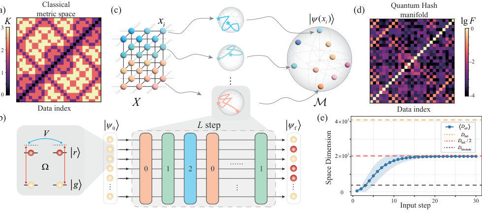
<figcaption class="paper-figure-caption"><b>Fig 1.</b> FIG. 1. Quantum hashing protocol and information space structure. (a) Classical metric space. A pairwise Hamming distance matrix of ternary data arranged in Gray code. (b) One-dimensional Rydberg atom arrays and schematic diagram of the quantum hashing process. Ternary symbols {0, 1, 2} are mapped to the quantum hashing elementary evolution operator. Under the action of a sequence of length L, the initial state |ψ0⟩evolves into the final quantum hashing state |ψf⟩. (c) Reconstruction of ternary information space to Hilbert space. Each ternary string xi in the classical space X uniquely determines a deterministic dynamical trajectory, which is mapped to a single quantum hashing state...</figcaption>
</figure>
<figure class="paper-figure-card">

<figcaption class="paper-figure-caption"><b>Fig 2.</b> FIG. 2. Hashing collision probability. (a) Distribution of hashing collision probabilities obtained from Monte Carlo simulations with 104 samples for a system of N = 12 atoms. The corresponding average collision probability is calculated to be Pave = 0.048%. (b) Average hashing collision prob- ability as a function of the number of atoms N, with the vertical axis shown on a logarithmic scale. The blue solid line represents the collision probability obtained from numerical statistics, while the orange dashed line denotes the scaling behavior expected for an ideal hash function, Pcoll = 1/2N.</figcaption>
</figure>
<figure class="paper-figure-card">
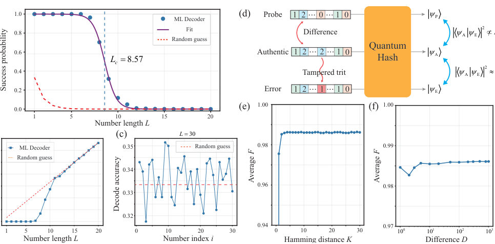
<figcaption class="paper-figure-caption"><b>Fig 3.</b> FIG. 3. Cryptographic properties of quantum hashing. (a) Random Forest machine learning (ML) decoder success probability versus input length L. The blue scatter points represent the numerical data, while the purple solid line denotes the logistic function fitting curve Pfit = 1 1+exp[(L−Lc)/k]. The red dashed line indicates the baseline corresponding to random guessing by the decoder, and the blue dashed line marks the fitted critical length Lc. (b) Hamming distance between the decoded output string and the true input string as a function of the input length L. The red dashed line indicating the random guessing limit, K = 2L/3. (c) Distribution of decoding accuracy for each trit position in...</figcaption>
</figure>
</div>

<p><strong>Summary.</strong> The authors show that constrained dynamics within Rydberg atom arrays naturally implement a quantum hashing mechanism. By encoding classical data into deterministic quantum trajectories, the system's geometry yields strong cryptographic properties like low collision rates and tamper sensitivity. This establishes quantum dynamics itself as a fundamental physical resource for information processing.</p>
<p><strong>Why it may be interesting.</strong> This work directly connects fundamental concepts in AMO physics (Rydberg interactions, many-body dynamics) to advanced topics in quantum information theory and cryptography, suggesting a new physical resource for computation.</p>
<details>
<summary>Detailed structure</summary>
<p><strong>Main problem.</strong> To demonstrate that quantum hashing, a cryptographic function, can emerge naturally from constrained many-body dynamics rather than requiring deliberately engineered algorithms.</p>
<p><strong>Main result.</strong> The geometric structure induced by the dynamics in Rydberg atom arrays provides intrinsic cryptographic properties like low collision probability and one-wayness.</p>
<p><strong>Method.</strong> Classical ternary strings are mapped to quantum states via deterministic trajectories governed by an effective Hamiltonian controlling blockade, pair antiblockade, and facilitation interactions.</p>
<p><strong>Model / system.</strong> The physical system is based on Rydberg atom arrays implementing constrained many-body dynamics. The evolution is controlled by a time-dependent Hamiltonian involving three generators: $O_B$, $O_P$, and $O_F$.</p>
<p><strong>Key observables.</strong> Collision probability ($P_{ave}$), state fidelity ($F$), effective dimension ($  ext{Deff}$), success probability for recovery ($P_{ ext{fit}}$).</p>
<p><strong>Important parameters / regimes.</strong> System size (number of atoms, $N=12$ used in examples) and input length ($L$).</p>
<p><strong>Assumptions / limitations.</strong> The protocol relies on the unique canonical representation provided by the initial state $|\psi_0
angle$.</p>
<p><strong>Figures summary.</strong> Figures illustrate the mapping from classical space to a quantum ensemble, showing low collision probability (Fig. 2) and the disappearance of block structure in fidelity matrices.</p>
<p><strong>Paper structure.</strong> The paper introduces the protocol by defining the dynamics on Rydberg arrays, analyzes the resulting state geometry using statistical measures, and then rigorously proves the emergence of cryptographic properties like one-wayness and tamper sensitivity from this intrinsic quantum evolution.</p>
</details>
<details>
<summary>Abstract</summary>
<p>In this Letter, we show that constrained many-body dynamics in Rydberg atom arrays naturally gives rise to a quantum hashing mechanism. By encoding ternary strings into deterministic trajectories in the state space, the classical information space is mapped onto a quantum state ensemble in the Hilbert space with an induced geometric structure. Statistical analysis reveals that this ensemble exhibits high probability near-orthogonality, random-like distribution, and broad geometric coverage. These geometric features naturally give rise to the essential cryptographic properties of quantum hashing, including low collision probability, one-wayness, tamper sensitivity, and privacy preservation. Our results demonstrate that the cryptographic functionality of quantum hashing need not rely on deliberately engineered algorithms, but can instead emerge naturally from constrained many-body dynamics, identifying quantum dynamics itself as a physical resource for cryptographic information processing.</p>
</details>
<p><sub><a href="#top">↑ back to top</a></sub></p>

<p><a id="paper-2607.03538"></a></p>
<h3 id="the-arrival-position-problem-in-quantum-mechanics"><a href="http://arxiv.org/abs/2607.03538v1">The arrival position problem in quantum mechanics</a></h3>
<p><strong>Authors:</strong> Ali Ayatollah Rafsanjani, Will Cavendish<br>
<strong>Type:</strong> theory · <strong>Category:</strong> other · <strong>PDF:</strong> <a href="https://arxiv.org/pdf/2607.03538v1">https://arxiv.org/pdf/2607.03538v1</a><br>
<strong>Analysis basis:</strong> full PDF text, analyzed in chunks
<strong>Topic relevance:</strong> 🔥 <code>quantum measurements</code> <strong>5/5</strong> · 🔥 <code>measurement-induced transitions</code> <strong>4/5</strong> · <code>non-equilibrium dynamics</code> <strong>2/5</strong> · <code>Keldysh / 2PI / non-Gaussian methods</code> <strong>1/5</strong> · <code>correlated / nonlocal dissipation</code> <strong>1/5</strong> · <code>driven-dissipative phase transition</code> <strong>1/5</strong> · <code>methods for driven-dissipative</code> <strong>1/5</strong></p>
<div class="figure-strip-hint">↔ Scroll figures horizontally</div>
<div class="paper-figures-scroll">
<figure class="paper-figure-card">

<figcaption class="paper-figure-caption"><b>Fig 1.</b> FIG. 1. A realization of the proposed experimental scheme and arrival position distributions for two proposals. Panel A shows a schematic of one realization of the proposed experimental scheme. An atom is prepared in the delocalized ground state of an optical double-well potential [68], which is formed by two laser beams generated by an acousto-optic modulator (AOM) driven by two radio-frequency (rf) tones. Lenses following the AOM control the beam geometry. The separation between the two wells is precisely tuned by the frequency difference of the rf drives. The atom is released from the trap in the presence of a screen in the plane x=L, where the origin of the coordinate system is taken to...</figcaption>
</figure>
<figure class="paper-figure-card">

<figcaption class="paper-figure-caption"><b>Fig 2.</b> FIG. 2. Comparison of AL(θ; ψs.w. σ ) for L = 10σ (left) and L = 103σ (right). The total detection probabilities PL(D; ψs.w. σ ) are shown in the table. The inset shows the QF and SD distributions over the angular interval from 88 to 90 degrees for L = 103σ. For CAP, the potential is µ1 σ, where the potential height (the superscript of µ) is given in units of ℏ2/(2mσ2). For ABC, β = i/(2σ), and for MS, λ = 2σ.</figcaption>
</figure>
<figure class="paper-figure-card">

<figcaption class="paper-figure-caption"><b>Fig 3.</b> FIG. 3. Comparison of the arrival position distributions AL  θ; ψd.w. σ,d  for the double-well initial state with well separation d = 20σ. As in Fig. 2, the panels show results for L = 10σ (left) and L = 103σ (right), with total detection probabilities PL  D; ψd.w. σ,d  listed in the inset tables. All model parameters remain identical to the single-well case: for CAP, the potential is µ1 σ (where the superscript denotes potential height in units of ℏ2/(2mσ2)); for ABC, β = i/(2σ); and for MS, λ = 2σ. The inset shows the QF and SD distributions over the angular interval from 87 to 90 degrees for L = 103σ.</figcaption>
</figure>
<figure class="paper-figure-card">
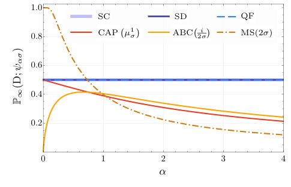
<figcaption class="paper-figure-caption"><b>Fig 4.</b> FIG. 4. The total detection probabilities for a Gaussian ini- tial state with initial width ασ as a function of the rescaling parameter α. The detector parameters are fixed across rescal- ings, with λ = 2σ, β = i/(2σ), and a CAP potential µ1 σ where the potential height is given in units of ℏ2/(2mσ2).</figcaption>
</figure>
</div>

<p><strong>Summary.</strong> This paper investigates the theoretical challenge of determining where a particle will be detected by an always-on screen in quantum mechanics. It compares multiple proposed solutions—like those using quantum flux or absorbing potentials—and demonstrates that these models make distinct, measurable predictions for arrival positions. The work highlights that resolving this 'arrival position problem' is crucial for understanding measurement processes beyond simple time measurements.</p>
<p><strong>Why it may be interesting.</strong> This is highly relevant for AMO physicists working on open quantum systems or measurement theory, as it tackles the fundamental ambiguity in predicting spatial outcomes when continuous monitoring (the 'screen problem') is involved.</p>
<details>
<summary>Detailed structure</summary>
<p><strong>Main problem.</strong> The paper addresses the 'arrival position problem' in quantum mechanics: predicting the probability distribution of <em>where</em> a particle is detected by an always-on screen, which complements the more studied arrival time problem.</p>
<p><strong>Main result.</strong> Different theoretical proposals for solving this measurement problem yield quantitatively distinguishable predictions for the arrival position marginals, even in simple experiments and in the far-field limit.</p>
<p><strong>Method.</strong> The authors compare quantitative predictions derived from six distinct proposed solutions to the screen problem, including semiclassical, quantum flux, complex absorbing potential, and path-integral approaches.</p>
<p><strong>Model / system.</strong> The system involves a particle (like an atom) initially confined in a trap, released to disperse under gravity, and detected by a planar 'waiting detector screen' ($SL$).</p>
<p><strong>Key observables.</strong> The primary observable is the probability distribution of arrival positions (the marginal distribution $\Pi_S(s; \Psi)$), derived from joint distributions of position and time.</p>
<p><strong>Important parameters / regimes.</strong> The analysis focuses on the long accumulation-time limit ($T 	o \infty$) and compares results in both near-field and far-field regimes.</p>
<p><strong>Assumptions / limitations.</strong> The framework assumes an 'always on' screen, requiring detection events or a definite 'no detection' outcome, rather than instantaneous measurements.</p>
<p><strong>Figures summary.</strong> Figure 1 schematically illustrates the proposed experimental setup and shows theoretical arrival position distributions for two different proposals (Panel A), with other panels showing associated $y$-position marginals.</p>
<p><strong>Paper structure.</strong> The paper systematically compares various quantum mechanical frameworks—such as Quantum Flux, Complex Absorbing Potential, and Semiclassical methods—to map initial wave functions onto measurable outcome probabilities at a detection screen.</p>
</details>
<details>
<summary>Abstract</summary>
<p>The problem of making unambiguous probabilistic predictions about experiments involving waiting "always on" detectors remains a challenge for quantum theory. While most research on this problem studies arrival time, i.e., predicting the distribution of when detection events occur, this paper studies the arrival position problem, which is the complementary challenge of predicting the distribution of where detection events occur. Despite the widespread recognition of the arrival time problem, the inability of standard quantum theory to address the arrival position problem remains a pervasive theoretical blind spot. In this paper, we compare quantitative arrival position predictions derived from prominent proposed solutions to the screen problem. As we show, these models yield distinguishable predictions even in relatively simple experiments achievable with current technology. Notably, many of these discrepancies persist even in the far-field limit, where standard semiclassical approximations are typically assumed to be valid.</p>
</details>
<p><sub><a href="#top">↑ back to top</a></sub></p>

<p><a id="paper-2607.04682"></a></p>
<h3 id="all-optical-control-of-coherent-perfect-absorption-via-frequency-conversion"><a href="http://arxiv.org/abs/2607.04682v1">All-optical control of coherent perfect absorption via frequency conversion</a></h3>
<p><strong>Authors:</strong> Rikizo Ikuta, Hirokazu Kobayashi, Hiroki Takahashi<br>
<strong>Type:</strong> experiment · <strong>Category:</strong> other · <strong>PDF:</strong> <a href="https://arxiv.org/pdf/2607.04682v1">https://arxiv.org/pdf/2607.04682v1</a><br>
<strong>Analysis basis:</strong> full PDF text, analyzed in chunks
<strong>Topic relevance:</strong> 🔥 <code>correlated / nonlocal dissipation</code> <strong>4/5</strong> · <code>driven-dissipative phase transition</code> <strong>3/5</strong> · <code>interference shaping light</code> <strong>3/5</strong> · <code>quantum optics experiment</code> <strong>3/5</strong> · <code>Tavis-Cummings &amp; cavity-many-emitter</code> <strong>2/5</strong> · <code>correlated cavity matter</code> <strong>2/5</strong> · <code>methods for driven-dissipative</code> <strong>2/5</strong> · <code>non-equilibrium dynamics</code> <strong>2/5</strong> · <code>non-equilibrium universality</code> <strong>2/5</strong> · <code>Keldysh / 2PI / non-Gaussian methods</code> <strong>1/5</strong> · <code>Kondo &amp; dissipative impurity</code> <strong>1/5</strong> · <code>analog quantum simulation</code> <strong>1/5</strong> · <code>entanglement &amp; information structure</code> <strong>1/5</strong> · <code>measurement-induced transitions</code> <strong>1/5</strong> · <code>quantum measurements</code> <strong>1/5</strong></p>
<div class="figure-strip-hint">↔ Scroll figures horizontally</div>
<div class="paper-figures-scroll">
<figure class="paper-figure-card">

<figcaption class="paper-figure-caption"><b>Fig 1.</b> FIG. 1. Concept of FC-CPA, based on a two-sided Fabry- Pérot cavity with frequency-conversion-induced optical loss. (a) Implementation of a lossy FP cavity using frequency con- version inside the cavity. The signal light is injected into the lossy cavity acting as a BS from (b) one side, (c) both sides with identical phase, and (d) both sides with a π-phase dif- ference between the inputs.</figcaption>
</figure>
<figure class="paper-figure-card">

<figcaption class="paper-figure-caption"><b>Fig 2.</b> FIG. 2. Experimental setup. The cyan and red solid lines indicate the signal light at 1581 nm and frequency-converted light at 780 nm, respectively. The red dashed line indicates the externally injected environmental light at 780 nm. Light beams at different wavelengths are combined and separated using dichroic mirrors (DMs). Details are provided in the main text.</figcaption>
</figure>
<figure class="paper-figure-card">

<figcaption class="paper-figure-caption"><b>Fig 3.</b> FIG. 4. Pump-power dependence of the transmission, reflec- tion, and conversion fractions. Blue, green, and orange data were measured at PDH, PDV, and PDE, respectively. The gray points show the sum of the transmission, reflection, and conversion fractions. Signal light is input from (a) cw direc- tion, and (b) ccw direction.</figcaption>
</figure>
<figure class="paper-figure-card">

<figcaption class="paper-figure-caption"><b>Fig 4.</b> FIG. 3. Normalized observed responses from the FC-CPA for input from either cw or ccw direction. The blue, green, and orange colors denote the detector channels PDH, PDV, and PDE, respectively, corresponding to the colors used in Fig. 2. Darker colors correspond to higher pump powers. Spectra of (a) transmission, (b) reflection, and (c) conversion are shown for the signal input in the cw direction measured at pump powers of 0 mW, 21 mW, 72 mW, and 145 mW. (d), (e), and (f) show the corresponding spectra for the ccw direction mea- sured at the pump powers of 0 mW, 39 mW, 110 mW, and 180 mW.</figcaption>
</figure>
<figure class="paper-figure-card">
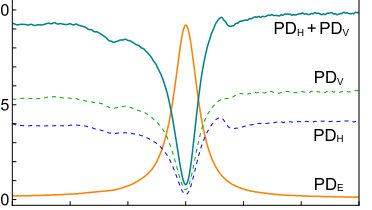
<figcaption class="paper-figure-caption"><b>Fig 5.</b> FIG. 5. FC-CPA at the pump power of 45 mW using signal light incident from both directions. The amount of absorption from the main system (cyan) into the environment (orange) reaches approximately 92 %, which is not achieved when the signal is injected from either the cw or ccw direction alone.</figcaption>
</figure>
</div>

<p><strong>Summary.</strong> This paper presents an all-optical method to achieve Coherent Perfect Absorption (CPA) by utilizing frequency conversion within a PPLN waveguide resonator. By coupling the signal light to a dynamically tunable environmental mode, the authors demonstrate that CPA can be switched on and off optically. Furthermore, they introduce environment-assisted control, turning the passive loss reservoir into an active port for enhanced absorption management.</p>
<p><strong>Why it may be interesting.</strong> This work is highly relevant to open quantum systems and quantum optics because it treats engineered dissipation (loss) not as a fixed parameter but as an actively controllable degree of freedom using nonlinear optical processes. The concept of turning the environment into a coherent control port mirrors concepts in cavity QED where external fields manipulate system decay rates.</p>
<details>
<summary>Detailed structure</summary>
<p><strong>Main problem.</strong> The primary goal is achieving all-optically controllable Coherent Perfect Absorption (CPA), overcoming the limitation of conventional CPA which relies on fixed material loss.</p>
<p><strong>Main result.</strong> The authors demonstrate that by using frequency conversion, they can create a dynamically tunable loss channel, and further enhance control by injecting an external field into the environmental mode, achieving up to 92% absorption.</p>
<p><strong>Method.</strong> The work combines theoretical modeling (using input-output relations) with experimental implementation in a periodically poled lithium niobate waveguide resonator coupled to an interferometer setup.</p>
<p><strong>Model / system.</strong> The physical platform is a frequency-conversion-based CPA system implemented in a PPLN/WR placed inside a two-sided Fabry-Pérot cavity. The mechanism involves coupling the resonant signal field (1581 nm) to a non-resonant environmental mode (780 nm) via a pump field, creating a tunable lossy beamsplitter.</p>
<p><strong>Key observables.</strong> Absorption percentage (up to 92%), transmission/reflection spectra, and the energy remaining in the main system channels ($\alpha_{1,out}, \alpha_{2,out}$).</p>
<p><strong>Important parameters / regimes.</strong> Pump power, detuning ($\Delta_c$), relative phase between counterpropagating signals, and the environmental field amplitude ($\alpha_{e,in}$).</p>
<p><strong>Assumptions / limitations.</strong> The analysis treats fields as classical complex amplitudes; initial theoretical derivations assume zero intrinsic loss in certain channels for simplification.</p>
<p><strong>Figures summary.</strong> Figures show normalized spectra (Transmission, Reflection, Conversion) vs. pump power, and critically, compare output intensities with and without the injected environmental field to demonstrate active control over absorption.</p>
<p><strong>Paper structure.</strong> The paper progresses from establishing the need for controllable CPA, detailing the frequency-conversion mechanism in a PPLN/WR cavity, deriving the necessary theoretical framework (input-output relations), demonstrating single-sided and two-sided excitation effects, and finally showcasing environmental assistance for active control.</p>
</details>
<details>
<summary>Abstract</summary>
<p>Coherent perfect absorption (CPA) extinguishes optical fields through interference and dissipation, but conventional implementations rely on material loss that is largely fixed after fabrication. Here we demonstrate all-optically controllable CPA based on frequency conversion in a periodically poled lithium niobate waveguide resonator. Pump-driven frequency conversion couples a resonant signal field at 1581 nm in the main system to a non-resonant environmental mode at 780 nm, creating a dynamically tunable effective loss channel. The nonlinear cavity acts as a tunable lossy beamsplitter without intrinsic material absorption. Under coherent two-sided signal injection, we observe up to 92 % absorption. We further introduce environment-assisted CPA by injecting an external field into the frequency-converted environmental mode, turning the environment from a passive loss reservoir into an addressable coherent control port. Our results establish a frequency-conversion-based platform for all-optical control of dissipation in CPA, combining pump-tunable loss with environment-assisted coherent control.</p>
</details>
<p><sub><a href="#top">↑ back to top</a></sub></p>

<p><a id="paper-2607.04742"></a></p>
<h3 id="quantum-optical-bound-states-in-the-continuum"><a href="http://arxiv.org/abs/2607.04742v1">Quantum-Optical Bound States in the Continuum</a></h3>
<p><strong>Authors:</strong> Ruo Kun Cai, Zhi Jiao Deng, Chun Wang Wu, Ping Xing Chen<br>
<strong>Type:</strong> both · <strong>Category:</strong> other · <strong>PDF:</strong> <a href="https://arxiv.org/pdf/2607.04742v1">https://arxiv.org/pdf/2607.04742v1</a><br>
<strong>Analysis basis:</strong> full PDF text, analyzed in chunks
<strong>Topic relevance:</strong> 🔥 <code>analog quantum simulation</code> <strong>4/5</strong> · <code>Tavis-Cummings &amp; cavity-many-emitter</code> <strong>3/5</strong> · <code>correlated cavity matter</code> <strong>3/5</strong> · <code>driven-dissipative phase transition</code> <strong>3/5</strong> · <code>interference shaping light</code> <strong>3/5</strong> · <code>methods for driven-dissipative</code> <strong>3/5</strong> · <code>Frenkel-Kontorova</code> <strong>2/5</strong> · <code>non-equilibrium dynamics</code> <strong>2/5</strong> · <code>quantum optics experiment</code> <strong>2/5</strong> · <code>QC/QI experiment</code> <strong>1/5</strong> · <code>exotic spin models in light-matter</code> <strong>1/5</strong> · <code>non-equilibrium universality</code> <strong>1/5</strong> · <code>spintronics-quantum-optics interface</code> <strong>1/5</strong></p>
<div class="figure-strip-hint">↔ Scroll figures horizontally</div>
<div class="paper-figures-scroll">
<figure class="paper-figure-card">
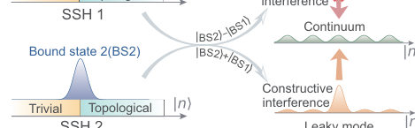
<figcaption class="paper-figure-caption"><b>Fig 1.</b> FIG. 1. Schematic of the spin-boson lattice model and the for- mation of a quantum-optical BIC. (a) Mapping of the driven JC model onto a FSL, comprising two semi-infinite anisotropic SSH chains coupled to a central chain with a continuous spec- trum. (b) Symmetric coupling of the localized bound states (in each SSH chain) to the common continuum. Destructive and constructive quantum interference between these chan- nels gives rise to a BIC and a leaky mode, respectively. (c) Spectroscopic detection protocol: Fourier analysis of the chi- ral symmetry operator’s time evolution reveals the BIC sig- nature—a discrete spectral peak within a continuous back- ground.</figcaption>
</figure>
<figure class="paper-figure-card">

<figcaption class="paper-figure-caption"><b>Fig 2.</b> FIG. 2. Exact decomposition of the Hilbert space and lattice structure. (a) Topological subspace: mapping onto a semi- infinite anisotropic SSH chain, which hosts a topological zero mode localized at the domain wall. The markedly higher in- verse participation ratio (IPR) of this mode and its confined probability distribution in the Fock-state basis (inset) con- firm its localized character. (b) Trivial (non-topological) sub- space: the SSH chain coupled to a continuum. The original topological zero mode becomes unstable due to leakage into the continuum, manifested by the broadening and diffusion of the probability distribution p(n) during time evolution. Pa- rameters: g=1, s=0.25, r=1,...</figcaption>
</figure>
<figure class="paper-figure-card">

<figcaption class="paper-figure-caption"><b>Fig 3.</b> FIG. 3. Spectroscopic protocol for detecting the quantum- optical BIC. (a) Time evolution of the chiral-symmetry- operator expectation values for three different initial states: the topological zero mode |a′, 0⟩(top), |e, 0⟩residing in the trivial subspace (middle), and their coherent superposition (bottom). (b) Corresponding spectra obtained by Fourier transform, showing a zero-mode discrete peak (top), a broad continuum of the trivial subspace (middle), and the defini- tive BIC signature—a sharp peak embedded in a continuous background (bottom). Parameters: g=1, s=0.5, r=0.01, and β=0.1.</figcaption>
</figure>
<figure class="paper-figure-card">

<figcaption class="paper-figure-caption"><b>Fig 4.</b> FIG. 4. Experimental proposal for the quantum-optical BIC with a trapped ion. (a) A single 40Ca+ ion confined in a Paul trap, representing the composite spin-boson system. The ef- fective (pseudo-)spin is encoded in a selected set of internal electronic states, and the bosonic mode corresponds to the harmonic motion (phonon) of the ion with frequency ν. The system is coherently manipulated via 729-nm and 854-nm laser beams. (b) Relevant level scheme, optical transitions, and laser wavelengths for engineering the Hamiltonian that realizes the quantum-optical BIC.</figcaption>
</figure>
</div>

<p><strong>Summary.</strong> The paper addresses the challenge of observing Bound States in the Continuum (BICs) in quantized optical systems by proposing a model based on a driven Jaynes-Cummings system mapped onto coupled SSH chains. The BIC is formed through destructive quantum interference, and its signature is detected spectroscopically via Fourier analysis of symmetry operators. A detailed experimental proposal using trapped ions makes this exotic physics highly accessible for current AMO platforms.</p>
<p><strong>Why it may be interesting.</strong> This work is highly relevant as it bridges advanced concepts from condensed matter physics (topological insulators, SSH chains) with modern AMO platforms (trapped ions, cavity QED), providing a concrete pathway to observe exotic quantum phenomena at the quantum limit.</p>
<details>
<summary>Detailed structure</summary>
<p><strong>Main problem.</strong> The core problem is finding a quantum-optical analog of Bound States in the Continuum (BICs) and developing a method to experimentally detect their signature when the field is quantized.</p>
<p><strong>Main result.</strong> The authors demonstrate that a BIC can be formed in a driven multi-level Jaynes-Cummings system via destructive quantum interference between two topologically localized states. They propose a highly feasible detection protocol using a single trapped ion.</p>
<p><strong>Method.</strong> The theoretical analysis involves mapping the model to an extended structure (FSL of SSH chains) and utilizing symmetry operators ($\hat{S}$ or $\hat{C}$) whose time evolution is Fourier-transformed to reveal the discrete spectral peak signature.</p>
<p><strong>Model / system.</strong> The primary model is a driven multi-level Jaynes-Cummings system, which is mapped onto a Fock-state lattice (FSL) comprising two semi-infinite inhomogeneous Su-Schrieffer-Heeger (SSH) chains coupled to a continuum. Experimentally, this is realized using a single trapped $    ext{Ca}^+$ ion where internal electronic states encode the pseudo-spin and external motion acts as the bosonic mode.</p>
<p><strong>Key observables.</strong> The spectroscopic signature of the BIC: a discrete spectral peak embedded within a continuous background, measured by Fourier-transforming the time-dependent dynamics of the chiral-symmetry operator ($\hat{C}$).</p>
<p><strong>Important parameters / regimes.</strong> JC-coupling strength ($g \sim 2\pi 	imes 10	ext{kHz}$), short evolution times ($\le 5	ext{ms}$), and the requirement for destructive quantum interference.</p>
<p><strong>Assumptions / limitations.</strong> The model assumes that the system can be accurately described by a driven JC Hamiltonian, which is then decomposed into topological and non-topological subspaces to isolate the BIC mechanism.</p>
<p><strong>Figures summary.</strong> Figures illustrate the schematic mapping of the JC model onto an FSL (two SSH chains + continuum), show how destructive interference forms the BIC versus constructive interference forming leaky modes, and detail the spectroscopic detection protocol using Fourier analysis.</p>
<p><strong>Paper structure.</strong> The paper first introduces the theoretical concept by modeling the system with a driven JC Hamiltonian mapped to an FSL. It then develops the diagnostic tool—Fourier-transforming the chiral-symmetry operator dynamics—to find the BIC signature. Finally, it provides a detailed, highly feasible experimental proposal using trapped ions to realize and measure this quantum-optical BIC.</p>
</details>
<details>
<summary>Abstract</summary>
<p>Bound states in the continuum (BICs) are counterintuitive localized states that lie within the continuum of extended states. While extensively realized and utilized in classical wave systems, it is still unclear what a close analog of BICs would be, and how to extract their experimental signature in quantum-optical settings -- where the wave field itself is quantized into bosonic excitations. Here, we present a paradigmatic quantum-optical model consisting of a driven multi-level Jaynes-Cummings (JC) system, featuring few quantum degrees of freedom yet capable of hosting a BIC. Using the concept of a Fock-state lattice (FSL), this model can be mapped to an extended structure comprising two semi-infinite inhomogeneous Su-Schrieffer-Heeger (SSH) chains coupled to a common continuum. An appropriate quantum superposition of two topological zero modes from the separate chains forms a BIC that remains perfectly localized in the Fock-state dimension within the continuum spectrum, due to complete decoupling from the common continuum via destructive quantum interference. We further develop a method to extract the spectroscopic signature of the BIC -- a discrete peak embedded in a continuous background -- by Fourier-transforming the time-dependent dynamics of the system's chiral-symmetry operator. A highly feasible experimental proposal using a single trapped ion is provided. Our work bridges BIC physics with quantum optics, opening a pathway to harnessing such exotic states at the quantum limit.</p>
</details>
<p><sub><a href="#top">↑ back to top</a></sub></p>

<p><a id="paper-2607.03820"></a></p>
<h3 id="matter-wave-induced-transparenc"><a href="http://arxiv.org/abs/2607.03820v1">Matter-wave Induced Transparenc</a></h3>
<p><strong>Authors:</strong> Tongkang wang, Yuqi Liu, Wenlan Chen, Zhendong Zhang, Jiazhong Hu<br>
<strong>Type:</strong> both · <strong>Category:</strong> other · <strong>PDF:</strong> <a href="https://arxiv.org/pdf/2607.03820v1">https://arxiv.org/pdf/2607.03820v1</a><br>
<strong>Analysis basis:</strong> full PDF text, analyzed in chunks
<strong>Topic relevance:</strong> 🔥 <code>analog quantum simulation</code> <strong>4/5</strong> · 🔥 <code>methods for driven-dissipative</code> <strong>4/5</strong> · <code>Keldysh / 2PI / non-Gaussian methods</code> <strong>3/5</strong> · <code>correlated / nonlocal dissipation</code> <strong>3/5</strong> · <code>driven-dissipative phase transition</code> <strong>3/5</strong> · <code>interference shaping light</code> <strong>3/5</strong> · <code>non-equilibrium dynamics</code> <strong>2/5</strong> · <code>non-equilibrium universality</code> <strong>2/5</strong> · <code>Kondo &amp; dissipative impurity</code> <strong>1/5</strong> · <code>entanglement &amp; information structure</code> <strong>1/5</strong> · <code>measurement-induced transitions</code> <strong>1/5</strong></p>
<div class="figure-strip-hint">↔ Scroll figures horizontally</div>
<div class="paper-figures-scroll">
<figure class="paper-figure-card">

<figcaption class="paper-figure-caption"><b>Fig 1.</b> FIG. 1. From a two-level Feshbach resonance to a three-level matter-wave interference system. (a) A conventional magnetic Feshbach resonance can be viewed as an effective two-level system formed by an open-channel free-atom state |a⟩and a closed-channel molecular state |m1⟩. The magnetic field tunes the detuning ∆between the two states, while the Feshbach coupling ℏΩ01 produces an avoided crossing. Near resonance, the admixture of the lossy molecular state (with decay rate γ1) enhances inelastic collisional loss, analogous to absorption in a resonantly coupled two-level optical system. (b) To construct a three-level system for interacting matter waves, a second molecular state |m2⟩in...</figcaption>
</figure>
<figure class="paper-figure-card">
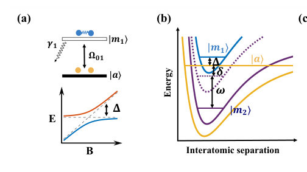
<figcaption class="paper-figure-caption"><b>Fig 2.</b> Fig. 1(a) illustrates a basic level structure underlying a conventional Feshbach resonance in a reduced descrip- tion of a two-level system: an open-channel free-atom state |a⟩coherently couples to a closed-channel molec- ular state |m1⟩through inherent collisional interactions (e.g., isotropic electronic and relativistic spin-dependent interactions) [9, 10]. In this regard, a Feshbach resonance realizes an effective two-level coupled system, where the magnetic field B tunes the relative detuning ∆between |a⟩and |m1⟩(with |m1⟩referenced to |a⟩). Plotted as an energy diagram versus B, the resonance corresponds to a Landau–Zener–type avoided crossing between the two states, with a gap set by...</figcaption>
</figure>
<figure class="paper-figure-card">

<figcaption class="paper-figure-caption"><b>Fig 3.</b> FIG. 2. Observation of matter-wave induced transparency in collisional loss. (a) Loss spectrum of a conventional two-level Feshbach resonance. The modulation frequency is fixed at ω/2π = 1.5 MHz, for which the second molecular state is far from resonance (δ/2π ≃−1 MHz, where 1 MHz corresponds to an effective Zeeman shift at around 0.8 G), and the system is therefore treated as a two-level configuration. The remaining atom fraction N/N0 shows a broad loss feature associated with the first molecular state |m1⟩. The center is shifted from the original |m1⟩-induced Feshbach resonance position of B0 = 19.84 G to B0 = 20.09 G due to the DC component light shift of the intensity-modulated pulse...</figcaption>
</figure>
<figure class="paper-figure-card">
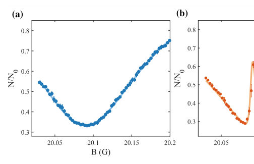
<figcaption class="paper-figure-caption"><b>Fig 4.</b> Fig. 1(d) shows the experimental timing sequence. We start with a BEC of cesium-133 atoms in the 6S1/2 hyper- fine ground state |F = 3, mF = 3⟩with approximately 1 × 105 atoms in a crossed optical dipole trap. A ho- mogeneous magnetic field B along the z axis defines the quantization axis and tunes the energy difference between the atomic threshold and the Feshbach molecular states [18]. After preparing the condensate, we ramp B to a target value, apply a modulation pulse of duration t, and then measure the remaining atom number N by absorp- tion imaging after time of flight (Supplementary Mate- rial). Throughout this work, the primary observable is the remaining atom fraction N/N0 (or...</figcaption>
</figure>
<figure class="paper-figure-card">

<figcaption class="paper-figure-caption"><b>Fig 5.</b> FIG. 3. Dark-state condition of matter-wave induced transparency and resonance interference. (a) Two- dimensional map of the remaining atom fraction N/N0 as a function of magnetic field B and modulation frequency ω. The broad region of reduced atom number corresponds to the dissipative Feshbach resonance involving the lossy molecular state |m1⟩. Within this lossy background, a narrow ridge of enhanced survival appears, marking the matter-wave transparency condition where the second molecular state |m2⟩participates in the three-level interference. (b) Representative magnetic-field spectra taken at two different modulation frequencies, ω/2π = 2.600 MHz and 2.485 MHz. The loss-suppressed...</figcaption>
</figure>
</div>

<p><strong>Summary.</strong> The research reports on achieving matter-wave induced transparency in atomic systems by exploiting destructive interference within a highly dissipative Feshbach resonance. By coupling an open atom channel to two molecular channels via modulation, they create a tunable dark state that suppresses collisional loss. This establishes a new, purely interaction-based route for studying non-Hermitian quantum dynamics.</p>
<p><strong>Why it may be interesting.</strong> This work provides a powerful platform to explore programmable non-Hermitian physics and quantum chemistry using purely matter-wave interactions, extending EIT concepts into the realm of collisional loss engineering.</p>
<details>
<summary>Detailed structure</summary>
<p><strong>Main problem.</strong> To induce transparency through inherent atomic collisional interactions (matter-wave scattering) rather than relying on external optical excitation pathways.</p>
<p><strong>Main result.</strong> The authors successfully demonstrated matter-wave induced transparency, observing a narrow loss-suppressed window within a broad Feshbach resonance by engineering destructive interference among scattering pathways.</p>
<p><strong>Method.</strong> The study combines experimental realization using Bose-Einstein condensates with theoretical modeling involving coupled-channel calculations and adiabatic elimination to derive effective nonlinear dynamics.</p>
<p><strong>Model / system.</strong> The system is modeled as an effective three-level atom–molecule coupled system in Cesium BECs, utilizing modulation-induced Feshbach resonances to create a $\Lambda$-type configuration driven by intrinsic matter-wave interactions.</p>
<p><strong>Key observables.</strong> Loss spectrum of the atomic fraction ($N/N_0$), transparency window linewidth, and the dependence of the transparency position on magnetic field and modulation frequency ($\omega$).</p>
<p><strong>Important parameters / regimes.</strong> Detuning parameters ($\delta=0$ condition), modulation intensity ($I$), and background scattering lengths ($a_{bg}$).</p>
<p><strong>Assumptions / limitations.</strong> The analysis requires a phase-coherent quantum description, ruling out classical rate-equation models for collisional loss.</p>
<p><strong>Figures summary.</strong> Figures illustrate the transition from simple Feshbach resonances to engineered three-level systems; they show the appearance of the narrow transparency window inside the broad loss profile and map this phenomenon in parameter space (B vs $\omega$).</p>
<p><strong>Paper structure.</strong> The paper progresses by first establishing the physical mechanism (MWIT via interference), then detailing the experimental realization using BECs, followed by quantitative analysis of tunability, and finally presenting theoretical derivations for the effective nonlinear dynamics governing the system.</p>
</details>
<details>
<summary>Abstract</summary>
<p>Electromagnetically induced transparency suppresses optical absorption through destructive interference, playing a central role in light-matter interaction and quantum information science. We report matter-wave induced transparency, where atomic collisional interactions induce transmission through a lossy molecular potential for the incident atomic scattering waves. Using cesium Bose-Einstein condensates and modulation-induced Feshbach resonances, we realize a three-level atom-molecule coupled system with unprecedented flexibility. Under the dark state condition, a narrow and tunable transparency window appears within a broad dissipative collisional resonance. The transparency window linewidth is controlled by modulation-induced coupling. And scattering pathways are selectable via multifrequency Floquet modulation. These results establish an interference-based route for exploring programmable nonequilibrium and non-Hermitian physics, steering quantum chemistry and precision measurements.</p>
</details>
<p><sub><a href="#top">↑ back to top</a></sub></p>

<p><a id="paper-2607.04736"></a></p>
<h3 id="magnetic-graphs-for-cavity-quantum-electrodynamics"><a href="http://arxiv.org/abs/2607.04736v1">Magnetic graphs for cavity quantum electrodynamics</a></h3>
<p><strong>Authors:</strong> Sunkyu Yu, Xianji Piao, Namkyoo Park<br>
<strong>Type:</strong> theory · <strong>Category:</strong> other · <strong>PDF:</strong> <a href="https://arxiv.org/pdf/2607.04736v1">https://arxiv.org/pdf/2607.04736v1</a><br>
<strong>Analysis basis:</strong> full PDF text, analyzed in chunks
<strong>Topic relevance:</strong> 🔥 <code>analog quantum simulation</code> <strong>4/5</strong> · 🔥 <code>exotic spin models in light-matter</code> <strong>4/5</strong> · <code>Tavis-Cummings &amp; cavity-many-emitter</code> <strong>3/5</strong> · <code>correlated cavity matter</code> <strong>3/5</strong> · <code>spintronics-quantum-optics interface</code> <strong>3/5</strong> · <code>driven-dissipative phase transition</code> <strong>2/5</strong> · <code>non-equilibrium dynamics</code> <strong>2/5</strong> · <code>correlated / nonlocal dissipation</code> <strong>1/5</strong> · <code>entanglement &amp; information structure</code> <strong>1/5</strong> · <code>methods for driven-dissipative</code> <strong>1/5</strong> · <code>non-equilibrium universality</code> <strong>1/5</strong></p>
<div class="figure-strip-hint">↔ Scroll figures horizontally</div>
<div class="paper-figures-scroll">
<figure class="paper-figure-card">

<figcaption class="paper-figure-caption"><b>Fig 1.</b> FIG. 1. Magnetic graph model for single-atom cavity QED. a,b, Schematics for the generalized</figcaption>
</figure>
<figure class="paper-figure-card">

<figcaption class="paper-figure-caption"><b>Fig 2.</b> Figure 2 shows the FR graph connectivity depending on η. According to Eq. (4), the graph</figcaption>
</figure>
<figure class="paper-figure-card">
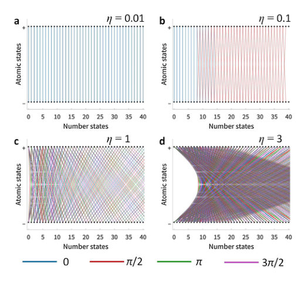
<figcaption class="paper-figure-caption"><b>Fig 3.</b> FIG. 2. Graph connectivity for different values of η at t = 0. Edges with weights greater than</figcaption>
</figure>
<figure class="paper-figure-card">
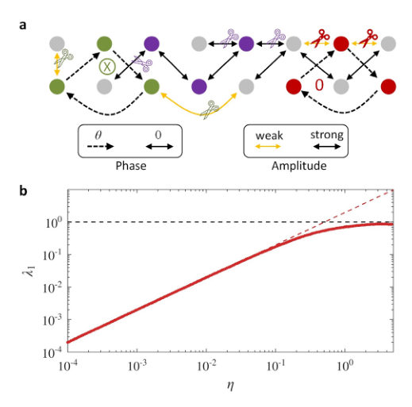
<figcaption class="paper-figure-caption"><b>Fig 4.</b> FIG. 3. Stronger coupling indicates a higher cost for separating a large nonmagnetic</figcaption>
</figure>
<figure class="paper-figure-card">

<figcaption class="paper-figure-caption"><b>Fig 5.</b> FIG. 4. Phase frustration governs the USC. a,b, Schematics of subgraphs (coloured nodes)</figcaption>
</figure>
</div>

<p><strong>Summary.</strong> The paper introduces a novel magnetic graph model to analyze cavity QED systems operating under extreme light-matter coupling. By mapping the generalized Quantum Rabi Model onto a graph structure, the authors use graph connectivity metrics like the Laplacian's first eigenvalue to diagnose quantum phase transitions. This framework reveals that topological features, specifically phase frustration within subgraphs, are the primary drivers governing system behavior across different coupling regimes.</p>
<p><strong>Why it may be interesting.</strong> This work provides a powerful, unifying mathematical framework (graph theory) to analyze complex quantum dynamics in cQED, offering a single metric ($\lambda_1$) to track fundamental physical crossovers.</p>
<details>
<summary>Detailed structure</summary>
<p><strong>Main problem.</strong> The central challenge is strengthening light-matter coupling in cavity QED, requiring careful theoretical treatment across ultrastrong and deep-strong coupling regimes.</p>
<p><strong>Main result.</strong> The authors propose a magnetic graph model that maps the quantum Rabi Model onto graph connectivity, showing that phase frustration induced by subgraph topology drives the system's transition between coupling regimes.</p>
<p><strong>Method.</strong> The analysis uses graph theory concepts, specifically the normalized magnetic Laplacian and its first eigenvalue ($\lambda_1$), to characterize quantum dynamics via graph connectivity metrics like conductance and topological flux.</p>
<p><strong>Model / system.</strong> The study focuses on single-atom cavity Quantum Electrodynamics (cQED), modeled by a generalized, gauge-invariant Quantum Rabi Model (QRM) Hamiltonian. The system's dynamics are mapped onto a complex bipartite 'Floquet Rabi graph'.</p>
<p><strong>Key observables.</strong> First eigenvalue ($\lambda_1$) of the magnetic Laplacian, Conductance ($\langle C_q 
angle$), and topological flux ($\Phi_q$).</p>
<p><strong>Important parameters / regimes.</strong> Coupling strength ($\eta = |g|/\hbar$); regimes include weak, ultrastrong (USC), and deep-strong coupling (DSC).</p>
<p><strong>Assumptions / limitations.</strong> The method involves truncating the infinite bosonic Hilbert space to a two-level subspace for analysis.</p>
<p><strong>Figures summary.</strong> Figures illustrate the magnetic graph model mapping, showing how $\lambda_1$ varies with $\eta$, and detailing phase frustration effects via loop analyses (e.g., $q=2, q=3$).</p>
<p><strong>Paper structure.</strong> The paper develops the gauge-invariant QRM Hamiltonian, derives hopping coefficients using Laguerre polynomials, transforms the problem into a graph representation, and analyzes connectivity using the magnetic Laplacian to diagnose coupling regime transitions.</p>
</details>
<details>
<summary>Abstract</summary>
<p>Strengthening light-matter coupling has become a central challenge in cavity quantum electrodynamics (QED), enabling ultrafast gate operations, qubit protection, and deterministic nonlinear optics. As the coupling increases, even the simplest configuration, a two-level atom interacting with a quantized field, requires careful treatment, as exemplified by the gauge-invariant quantum Rabi model (QRM). Here we propose a magnetic graph model for single-atom cavity QED, which enables the interpretation of quantum dynamics across the ultrastrong coupling regime through graph connectivity. We demonstrate that the generalized QRM maps onto a complex bipartite graph of identical sites under Floquet boundary conditions. This framework captures the crossover from weak to deep-strong coupling via a single metric: the cost of disconnecting a nonmagnetic subgraph. We examine the mechanism underlying this connectivity transition, establishing phase frustration induced by subgraph topology as the primary driver. Scalable to many-body systems, this approach bridges graph theory and cavity QED, revealing highly complex-graph dynamics even in the simplest setting.</p>
</details>
<p><sub><a href="#top">↑ back to top</a></sub></p>

<p><a id="paper-2607.04363"></a></p>
<h3 id="purcell-effect-and-quantum-zeno-effect-suppressed-self-discharging-of-quantum-battery"><a href="http://arxiv.org/abs/2607.04363v1">Purcell effect and quantum Zeno effect suppressed self-discharging of quantum battery</a></h3>
<p><strong>Authors:</strong> Da-Wei Liu, Guoqing Tian, Zi-Hao Li, Shi-Qi Gan, Ying Wu, Liu-Gang Si<br>
<strong>Type:</strong> theory · <strong>Category:</strong> other · <strong>PDF:</strong> <a href="https://arxiv.org/pdf/2607.04363v1">https://arxiv.org/pdf/2607.04363v1</a><br>
<strong>Analysis basis:</strong> full PDF text, analyzed in chunks
<strong>Topic relevance:</strong> 🔥 <code>methods for driven-dissipative</code> <strong>4/5</strong> · <code>correlated / nonlocal dissipation</code> <strong>3/5</strong> · <code>correlated cavity matter</code> <strong>3/5</strong> · <code>driven-dissipative phase transition</code> <strong>3/5</strong> · <code>Keldysh / 2PI / non-Gaussian methods</code> <strong>2/5</strong> · <code>Tavis-Cummings &amp; cavity-many-emitter</code> <strong>2/5</strong> · <code>non-equilibrium dynamics</code> <strong>2/5</strong> · <code>non-equilibrium universality</code> <strong>2/5</strong> · <code>Kondo &amp; dissipative impurity</code> <strong>1/5</strong> · <code>analog quantum simulation</code> <strong>1/5</strong> · <code>measurement-induced transitions</code> <strong>1/5</strong> · <code>quantum measurements</code> <strong>1/5</strong></p>
<div class="figure-strip-hint">↔ Scroll figures horizontally</div>
<div class="paper-figures-scroll">
<figure class="paper-figure-card">
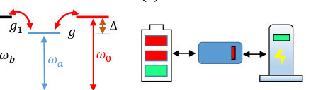
<figcaption class="paper-figure-caption"><b>Fig 1.</b> FIG. 1. (a) Schematic diagram of QB consisting of a aux- iliary cavity (left) and pump cavity (right). (b) Schematic diagram of energy levels for a near-resonant QB and charger. (c) Schematic diagram of a QB utilizing the virtual photon charging protocol.</figcaption>
</figure>
<figure class="paper-figure-card">
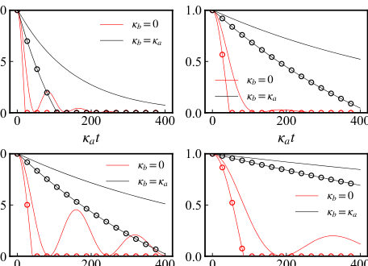
<figcaption class="paper-figure-caption"><b>Fig 2.</b> FIG. 2. The stored energy and ergotropy of the QB versus time under different charger dissipation and detuning. The unmarked line is energy, and the marked line is ergotropy. The parameters are chosen as (a) ∆= 10κa, Ω= 0, g = 0.2κa and g1 = 2κa, (b) ∆= 10κa, Ω= 0, g = 0.1κa and g1 = 2κa (c) ∆= 20κa, Ω= 0, g = 0.2κa and g1 = 2κaand (d) ∆= 20κa, Ω= 0, g = 0.1κa and g1 = 2κa.</figcaption>
</figure>
<figure class="paper-figure-card">
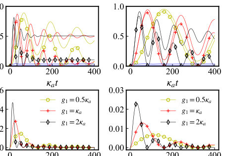
<figcaption class="paper-figure-caption"><b>Fig 3.</b> FIG. 3. (a) and (b) The stored energy and ergotropy of the QB versus time under different hopping strengths g1 and cavity-atom interaction strengths g. The unmarked line is stored energy, and the marked line is ergotropy. (c) and (d) The average charging power of the QB versus time under different hopping strengths and cavity-atom interac- tion strengths. The parameters are chosen as ∆= 10κa, Ω= 0.5κa and (a) g = 0.5κa, (b) g = 0.2κa, (c) g = 0.5κa, (d) g = 0.2κa.</figcaption>
</figure>
</div>

<p><strong>Summary.</strong> The paper proposes using the synergy between the Purcell effect and the Quantum Zeno Effect to solve critical stability issues—self-discharging and energy backflow—in quantum batteries. By engineering dissipation through these quantum effects, they achieve an unprecedented suppression of energy loss. This breakthrough significantly boosts the energy conversion efficiency, making QBs more viable for practical applications.</p>
<p><strong>Why it may be interesting.</strong> This work is highly relevant as it tackles open quantum system dynamics by engineering dissipation (Purcell/Zeno effects) to stabilize a functional quantum device (QB), which is a core topic in modern AMO physics and quantum optics.</p>
<details>
<summary>Detailed structure</summary>
<p><strong>Main problem.</strong> The primary challenge addressed is mitigating self-discharging and energy backflow in open quantum battery (QB) systems, which hinders the extraction of useful work.</p>
<p><strong>Main result.</strong> By combining the Purcell effect with the Quantum Zeno Effect (QZE), the researchers demonstrated a mechanism that suppresses charger-induced dissipation by four orders of magnitude, allowing near-full charging and high energy conversion efficiency.</p>
<p><strong>Method.</strong> The analysis uses theoretical modeling involving master equations derived from an effective Hamiltonian obtained via adiabatic elimination of auxiliary cavities.</p>
<p><strong>Model / system.</strong> The system models a quantum battery coupled to a charger via an auxiliary cavity. The dynamics are governed by master equations incorporating dissipation channels ($\kappa_a, \kappa_b$).</p>
<p><strong>Key observables.</strong> Stored energy E(t), ergotropy $\xi(t)$, self-discharging half-life time ($  au$), and extractable efficiency ($\eta$).</p>
<p><strong>Important parameters / regimes.</strong> Charger dissipation rate ($\kappa_b$), detuning ($\Delta$), coupling strengths ($g, g_1$), and the QZE/Purcell effect regime.</p>
<p><strong>Assumptions / limitations.</strong> The analysis relies on adiabatic elimination of the auxiliary cavity when the detuning is large; it also assumes initial full charging for self-discharging studies.</p>
<p><strong>Figures summary.</strong> Figures illustrate schematic system setups, and subsequent figures plot stored energy and ergotropy over time under varying charger dissipation rates ($\kappa_b$).</p>
<p><strong>Paper structure.</strong> The paper first establishes the physical model using a total Hamiltonian and derives effective dynamics via adiabatic elimination. It then analyzes how increasing charger dissipation strengthens the QZE effect, leading to suppressed self-discharging and high energy conversion efficiency.</p>
</details>
<details>
<summary>Abstract</summary>
<p>Quantum batteries (QB), as an energy storage and transfer device, not only show obvious advantages compared to classical electrochemical batteries, but also have important applications in quantum information. Self-discharging is a central obstacle to storing useful work in open QB, especially when the charger itself provides an unavoidable loss channel. Here we show that such charger-induced loss can be converted into a protection mechanism by combining Purcell effect with quantum Zeno effect. We reveal that the virtual photon process and the Purcell effect can induce the strong coupling regime to the quantum Zeno regime, in which the stronger the dissipation of the charger, the weaker the self-discharging effect of the QB. As a result, the dissipation caused by the charger to the QB can be suppressed four orders of magnitude in our scheme. Meanwhile, the quantum Zeno effect induced by the Purcell effect can also avoid the energy backflow between the QB and the charger. Owing to the significantly suppressed dissipation, the stored energy of QB can be charged to a nearly full state and the stored energy is almost converted into extractable work, which greatly improves the energy conversion efficiency.</p>
</details>
<p><sub><a href="#top">↑ back to top</a></sub></p>

<p><a id="paper-2607.04791"></a></p>
<h3 id="sector-memory-obstruction-to-probe-level-bath-emergence-in-finite-programmable-qubit-environments"><a href="http://arxiv.org/abs/2607.04791v1">Sector-memory obstruction to probe-level bath emergence in finite programmable qubit environments</a></h3>
<p><strong>Authors:</strong> Gaurav Sarmah, Ramakrishna Podila<br>
<strong>Type:</strong> both · <strong>Category:</strong> statistical mechanics · <strong>PDF:</strong> <a href="https://arxiv.org/pdf/2607.04791v1">https://arxiv.org/pdf/2607.04791v1</a><br>
<strong>Analysis basis:</strong> full PDF text, analyzed in chunks
<strong>Topic relevance:</strong> 🔥 <code>QC/QI experiment</code> <strong>4/5</strong> · 🔥 <code>non-equilibrium dynamics</code> <strong>4/5</strong> · <code>correlated / nonlocal dissipation</code> <strong>3/5</strong> · <code>driven-dissipative phase transition</code> <strong>3/5</strong> · <code>methods for driven-dissipative</code> <strong>3/5</strong> · <code>analog quantum simulation</code> <strong>2/5</strong> · <code>non-equilibrium universality</code> <strong>2/5</strong> · <code>Keldysh / 2PI / non-Gaussian methods</code> <strong>1/5</strong> · <code>Kondo &amp; dissipative impurity</code> <strong>1/5</strong> · <code>entanglement &amp; information structure</code> <strong>1/5</strong> · <code>scars &amp; prethermalization</code> <strong>1/5</strong></p>
<div class="figure-strip-hint">↔ Scroll figures horizontally</div>
<div class="paper-figures-scroll">
<figure class="paper-figure-card">

<figcaption class="paper-figure-caption"><b>Fig 1.</b> FIG. 1. Probe-level diagnostics for finite-bath emergence. A probe qubit S is coupled to a finite bath B of N qubits. Under charge-preserving dynamics, initial fixed-charge sectors remain dynamically separated. The measured quantities are the sector-resolved probe population p(q) e , the sector-memory variance MN, and the global Gibbs-fit error ∆global G . A finite environment is bath-like for the probe only when the sector- resolved reduced states collapse to a common Gibbs descrip- tion.</figcaption>
</figure>
<figure class="paper-figure-card">

<figcaption class="paper-figure-caption"><b>Fig 2.</b> FIG. 2. Exact Hamiltonian benchmark for sector-memory obstruction. The N = 8 charge-conserving calculation uses Haar-random pure states over each complete total-charge sec- tor; its ensemble-averaged late-time probe population follows p(q) e ≃q/(N + 1). The sector-resolved probe states cannot be represented by one global Gibbs state: the best sector- independent population fit leaves a large minimax error, giv- ing ∆global G = 0.782.</figcaption>
</figure>
<figure class="paper-figure-card">
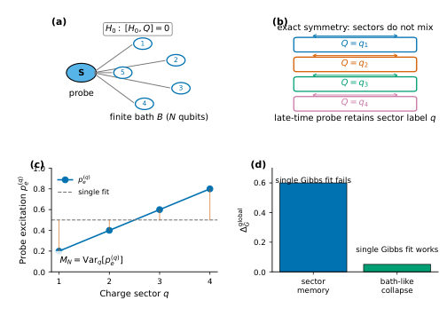
<figcaption class="paper-figure-caption"><b>Fig 3.</b> Figure 1 summarizes the operational structure of the test. In the Qiskit and IBM protocols, the probe qubit is initialized in |0⟩, the bath is initialized in a fixed ex- citation sector q, and the late-time or finite-depth probe population p(q) e is measured across sectors. The principal exact benchmark instead uses full-sector Haar-random pure states as specified in Eq. (28); the probe-fixed ex- act calculation is reported separately in the Supplemental Material (Figs. S1-S5). If the finite environment behaves as a single canonical bath for the probe, the values p(q) e should collapse to a sector-independent value. Persistent variation of p(q) e across q gives a nonzero sector-memory...</figcaption>
</figure>
<figure class="paper-figure-card">
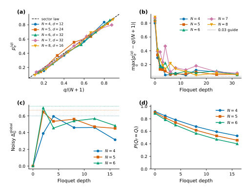
<figcaption class="paper-figure-caption"><b>Fig 4.</b> FIG. 3. Hardware-compatible circuit validation. Ideal and transpiled circuit simulations reproduce the sector law p(q) e ≃ q/(N + 1). Simple noisy simulations identify N = 4 as the most robust hardware target: at depth d = 4, the noisy circuit gives ∆global G = 0.593, close to the ideal value 0.60, while retaining a visible charge-preservation signal.</figcaption>
</figure>
<figure class="paper-figure-card">
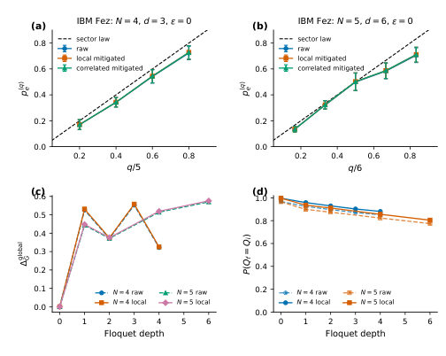
<figcaption class="paper-figure-caption"><b>Fig 5.</b> FIG. 4. IBM Fez observation of probe-level sector memory. The N = 4, d = 3, ϵ = 0 data show clear monotonic sector ordering and a large nonzero ∆global G . The N = 5, d = 6, ϵ = 0 data show that the effect survives at a larger bath size, although with stronger compression due to circuit depth and hardware noise. Raw and readout-mitigated analyses give the same qualitative conclusion.</figcaption>
</figure>
</div>

<p><strong>Summary.</strong> The paper investigates whether finite programmable qubit baths behave like true thermodynamic baths. By analyzing conserved charges, the authors show that local relaxation only occurs within restricted sectors defined by these charges. This results in a measurable 'sector memory' obstruction, proving that achieving full thermalization requires more than just local dynamics.</p>
<p><strong>Why it may be interesting.</strong> This work provides a rigorous, experimentally testable criterion for when an open quantum system can be modeled by standard thermal bath theories, which is crucial for understanding realistic quantum computation environments.</p>
<details>
<summary>Detailed structure</summary>
<p><strong>Main problem.</strong> The study aims to distinguish whether a finite quantum environment acts as a true thermal bath, leading to preparation-independent equilibrium states, or if its dynamics are restricted by conserved quantities.</p>
<p><strong>Main result.</strong> The authors conclude that due to the conservation of total excitation number in a finite programmable system, local equilibration only occurs within constrained sectors, failing to achieve a single, sector-independent Gibbs state.</p>
<p><strong>Method.</strong> The analysis uses theoretical diagnostics like Sector-memory variance ($M_N$) and Global Gibbs-fit error ($\Delta_{	ext{global}}^G$), validated through exact simulations, ideal Qiskit circuits, and physical experiments on superconducting qubits.</p>
<p><strong>Model / system.</strong> The model consists of a probe qubit coupled to a finite bath of $N$ programmable qubits. The dynamics are governed by an excitation-number-conserving Hamiltonian, leading to Hilbert space partitioning into sectors defined by the conserved charge $Q$.</p>
<p><strong>Key observables.</strong> Sector-resolved late-time population ($p_e^{(q)}$), Sector-memory variance ($M_N$), and Global Gibbs-fit error ($\Delta_{	ext{global}}^G$).</p>
<p><strong>Important parameters / regimes.</strong> Bath size ($N=4$ in experiments), symmetry-breaking strength ($\epsilon$), and simulation depth/time.</p>
<p><strong>Assumptions / limitations.</strong> The diagnostics are operational tests for cross-preparation consistency, not just local relaxation; the analysis relies on the existence of conserved charges partitioning the system dynamics.</p>
<p><strong>Figures summary.</strong> The notes mention figures showing depth-resolved scans of $M_N$ and $\Delta_{	ext{global}}^G$, demonstrating that while perturbations reduce these errors, they do not eliminate sector ordering.</p>
<p><strong>Paper structure.</strong> The paper establishes the problem by defining diagnostics ($p_e^{(q)}, M_N, \Delta_{	ext{global}}^G$), presents theoretical benchmarks using exact simulations, validates the approach with controlled quantum circuits (Floquet layers), and concludes with hardware implementation on IBM Fez.</p>
</details>
<details>
<summary>Abstract</summary>
<p>Finite quantum environments can relax local probes without acting as canonical baths. We study this distinction for a probe qubit coupled to a programmable bath of ($N$) qubits under excitation-number-conserving dynamics. The conserved charge partitions the Hilbert space into sectors. We characterize probe-level bath emergence using the sector-resolved late-time population ($p_e^{(q)}$), the sector-memory variance ($M_N$), and a global Gibbs-fit error ($Δ_G^{\mathrm{global}}$). Exact simulations with Haar-random pure states in each complete fixed-charge sector yield sector-dependent populations close to the maximally mixed-sector benchmark ($p_e^{(q)}=q/(N+1)$), producing a nonzero Gibbs obstruction. We then construct charge-preserving Floquet circuits using ($R_z$) phases and ($XX+YY$) exchange gates, validate them with ideal and noisy Qiskit simulations, and implement finite-depth experiments on IBM Fez. For ($N=4$) and ($ε=0$), the hardware data give ($M_N \simeq 0.044$), ($Δ_G^{\mathrm{global}} \simeq 0.558$), and charge preservation near 0.90 after readout mitigation. A paired symmetry-breaking scan using bath ($R_x(ε)$) rotations reduces both diagnostics while increasing charge leakage, but does not erase sector ordering over the accessible depths. These results show that equilibration within constrained sectors is insufficient to produce a single sector-independent Gibbs state for the probe.</p>
</details>
<p><sub><a href="#top">↑ back to top</a></sub></p>

<p><a id="paper-2607.04075"></a></p>
<h3 id="wei-norman-approach-for-non-hermitian-driven-spin-math171math-systems-and-its-application-to-defect-freezing"><a href="http://arxiv.org/abs/2607.04075v1">Wei-Norman approach for non-Hermitian driven spin-$S$ systems and its application to defect freezing</a></h3>
<p><strong>Authors:</strong> Mingwei Meng, Chen Sun<br>
<strong>Type:</strong> theory · <strong>Category:</strong> other · <strong>PDF:</strong> <a href="https://arxiv.org/pdf/2607.04075v1">https://arxiv.org/pdf/2607.04075v1</a><br>
<strong>Analysis basis:</strong> full PDF text, analyzed in chunks
<strong>Topic relevance:</strong> 🔥 <code>methods for driven-dissipative</code> <strong>4/5</strong> · 🔥 <code>non-equilibrium dynamics</code> <strong>4/5</strong> · <code>driven-dissipative phase transition</code> <strong>3/5</strong> · <code>exotic spin models in light-matter</code> <strong>3/5</strong> · <code>non-equilibrium universality</code> <strong>3/5</strong> · <code>analog quantum simulation</code> <strong>2/5</strong> · <code>spintronics-quantum-optics interface</code> <strong>2/5</strong> · <code>Keldysh / 2PI / non-Gaussian methods</code> <strong>1/5</strong> · <code>Kondo &amp; dissipative impurity</code> <strong>1/5</strong> · <code>correlated / nonlocal dissipation</code> <strong>1/5</strong> · <code>scars &amp; prethermalization</code> <strong>1/5</strong></p>
<div class="figure-strip-hint">↔ Scroll figures horizontally</div>
<div class="paper-figures-scroll">
<figure class="paper-figure-card">
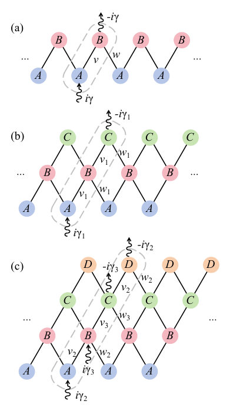
<figcaption class="paper-figure-caption"><b>Fig 1.</b> FIG. 1. Sketches of lattices of (a) the PT -SSH model, (b) its S = 1 extension, and (c) its S = 3/2 extension. A, B, C and D stand for sites in different sublattices, a solid line presents intracell or intercell hoppings between sites, and a waved line presents gain or loss at a given site. In each sketch four unit cells are plotted, with a dashed line encircling a specific unit cell, and only parameters within this cell and between it and its adjacent cell to the right are shown (parameters in the whole lattice can be read off by translational symmetry). The parameters of the S = 1 and S = 3/2 models are related to those of the S = 1/2 model as: v1 = √</figcaption>
</figure>
<figure class="paper-figure-card">
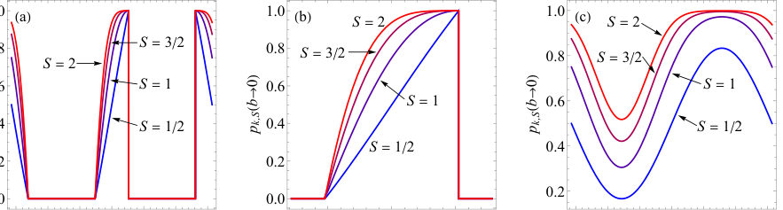
<figcaption class="paper-figure-caption"><b>Fig 2.</b> FIG. 2. Excitation probability in the adiabatic limit pk,S(b →0) vs. momentum k by Eq. (34) for the spin-S PT -SSH model under a quench for four different S from S = 1/2 to S = 2. (a) at γ/w = 0.5; (b) same as (a) but zoomed into a region near k = 0; (c) at γ/w = 1.5.</figcaption>
</figure>
<figure class="paper-figure-card">
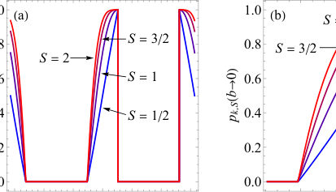
<figcaption class="paper-figure-caption"><b>Fig 3.</b> Fig. 3(a) shows nex,S(b →0) vs. γ/w by Eq. (40) for four different S from S = 1/2 to S = 2. As in the k-resolved result, a curve with a larger S is always above another curve with a smaller S. For each value of S, nex,S(b →0) increases monotonically with γ, and it experiences a sin- gularity at γ = w where the slope of the curve (namely, ∂nex,S(b →0)/∂γ) changes discontinuously. (Due to the arcsin term in Eq. (40), this slope diverges as γ →w−; it is finite as γ →w+.) The physical reason of this singular- ity is the same as in the S = 1/2 case, namely, γ = w this is the critical point between the two cases that a portion of or all of the k sectors traverse the PT -broken region. Using P...</figcaption>
</figure>
<figure class="paper-figure-card">
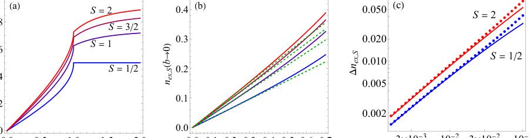
<figcaption class="paper-figure-caption"><b>Fig 4.</b> FIG. 3. Excitation density in the spin-S PT -SSH model under a quench. (a) Excitation density nex,S(b →0) vs. γ/w by Eq. (40) for four different S from S = 1/2 to S = 2. (b) The solid lines are the same as in (a) but for small γ/w, and the dashed lines are linear approximation by Eq. (41). (c) Excitation density above the frozen defect ∆nex,S vs. quench rate b at w = 1, γ = 0.3 for S = 1/2 and S = 2. The solid lines are by the approximate analytical expression Eq. (40), and the dots are from exact numerical integrations.</figcaption>
</figure>
</div>

<p><strong>Summary.</strong> This paper introduces the Wei-Norman approach as an analytical tool to solve the complex time evolution of high-spin ($S$) non-Hermitian quantum systems. By relating these multi-level dynamics to solvable spin-1/2 cases, the authors successfully applied it to study defect freezing in models like the PT-SSH chain. The results offer quantitative predictions for excitation behavior across higher-order exceptional points, suggesting experimental realization in photonic or circuit platforms.</p>
<p><strong>Why it may be interesting.</strong> This work provides a powerful, general analytical toolkit (Wei-Norman approach) for tackling non-Hermitian dynamics across multiple levels, directly connecting abstract mathematical techniques to observable physical phenomena like defect freezing in condensed matter models.</p>
<details>
<summary>Detailed structure</summary>
<p><strong>Main problem.</strong> The core problem is finding exact analytical solutions for nonadiabatic dynamics in complex, time-dependent, non-Hermitian quantum systems.</p>
<p><strong>Main result.</strong> The authors developed a general method using the Wei-Norman approach to solve spin-$S$ extensions of solvable two-level models and predicted that defect freezing occurs specifically when momentum sectors pass through higher-order exceptional points during a quench.</p>
<p><strong>Method.</strong> The primary technique is the Wei-Norman approach, which allows expressing the evolution operator for high-spin systems in closed analytical forms using Jacobi polynomials derived from simpler spin-1/2 models.</p>
<p><strong>Model / system.</strong> The study focuses on non-Hermitian spin-$S$ systems driven by time-dependent Hamiltonians, exemplified by applying the method to the PT-symmetric Su-Schrieffer-Heeger (PT-SSH) model in momentum space.</p>
<p><strong>Key observables.</strong> Excitation probabilities and total excitation densities; spectral properties near exceptional points (EPs).</p>
<p><strong>Important parameters / regimes.</strong> Non-Hermiticity parameter ($\gamma$), quench rate ($b$), and the spin quantum number ($S$).</p>
<p><strong>Assumptions / limitations.</strong> The method assumes that the time dependence of the Hamiltonian allows for a decomposition suitable for the Wei-Norman approach, relating higher-spin dynamics to solvable two-level systems.</p>
<p><strong>Figures summary.</strong> Not specified in the notes; the text references mathematical equations (e.g., Eq. 16) showing closed forms using Jacobi polynomials and spectral analysis of the PT-SSH model.</p>
<p><strong>Paper structure.</strong> The paper first introduces the general difficulty of nonadiabatic dynamics, then details the Wei-Norman approach to solve spin-$S$ systems by relating them to $S=1/2$. It subsequently applies this framework to analyze defect freezing in the PT-SSH model, deriving analytical predictions for excitation behavior near higher-order EPs.</p>
</details>
<details>
<summary>Abstract</summary>
<p>In the theoretical study of nonequilibrium non-Hermitian systems, obtaining exact analytical solutions for their nonadiabatic dynamics is highly desirable yet often challenging. In this work, we identify a class of non-Hermitian quantum systems where this difficulty can be substantially reduced. Employing the Wei-Norman approach, we show that for a spin-$S$ subject to a general non-Hermitian time-dependent drive, the matrix elements of the evolution operator can be expressed in closed analytical forms (via Jacobi polynomials) in terms of the corresponding spin-$1/2$ model. This approach is straightforward and accessible to nonspecialists in Lie algebra. As an application, we investigate a specific nonequilibrium non-Hermitian phenomenon known as defect freezing, i.e., the existence of excitations in the adiabatic limit, in spin-$S$ extensions of the $\mathcal{PT}$-symmetric Su-Schrieffer-Heeger model under linear quenches. We derive exact analytical expressions for the momentum-resolved excitation probabilities and the total excitation densities. Our results reveal that defect freezing occurs exclusively in momentum sectors that traverse the $\mathcal{PT}$-symmetry-broken region -- and thus pass through a pair of higher-order exceptional points (EPs) -- during the quench; notably, the excitation density exhibits a singularity at a critical value of the non-Hermiticity parameter. This work enriches the analytical toolkit for nonadiabatic dynamics in multi-level non-Hermitian systems and provides quantitative, testable predictions for defect freezing across higher-order EPs, possibly accessible on platforms such as electric circuit networks and photonic lattices.</p>
</details>
<p><sub><a href="#top">↑ back to top</a></sub></p>

<p><a id="paper-2607.03552"></a></p>
<h3 id="a-pulsed-live-cell-quantum-microscope-for-entangled-solid-state-and-biological-qubits"><a href="http://arxiv.org/abs/2607.03552v1">A Pulsed Live-Cell Quantum Microscope for Entangled Solid State and Biological Qubits</a></h3>
<p><strong>Authors:</strong> Javier Noé Ramos-Silva, Sangjun Noh, Minghao Jiang, Parisa Aghaei, Ayla Hazrathosseini, Jocelyn Leon, Philip Hemmer, Peter J. Burke<br>
<strong>Type:</strong> experiment · <strong>Category:</strong> other · <strong>PDF:</strong> <a href="https://arxiv.org/pdf/2607.03552v1">https://arxiv.org/pdf/2607.03552v1</a><br>
<strong>Analysis basis:</strong> full PDF text, analyzed in chunks
<strong>Topic relevance:</strong> 🔥 <code>QC/QI experiment</code> <strong>4/5</strong> · 🔥 <code>spintronics-quantum-optics interface</code> <strong>4/5</strong> · <code>quantum measurements</code> <strong>3/5</strong> · <code>quantum optics experiment</code> <strong>3/5</strong> · <code>exotic spin models in light-matter</code> <strong>2/5</strong> · <code>measurement-induced transitions</code> <strong>2/5</strong> · <code>correlated / nonlocal dissipation</code> <strong>1/5</strong> · <code>correlated cavity matter</code> <strong>1/5</strong> · <code>driven-dissipative phase transition</code> <strong>1/5</strong> · <code>entanglement &amp; information structure</code> <strong>1/5</strong> · <code>methods for driven-dissipative</code> <strong>1/5</strong> · <code>non-equilibrium dynamics</code> <strong>1/5</strong></p>
<div class="figure-strip-hint">↔ Scroll figures horizontally</div>
<div class="paper-figures-scroll">
<figure class="paper-figure-card">

<figcaption class="paper-figure-caption"><b>Fig 1.</b> FIG. 1: Conceptual diagram of pulsed quantum microscope showing biological and solid state qubits in the same cell in one system. Full quantum state manipulation of both qubits is enabled by pulsed optics, single photon detectors, and pulsed microwave sources (left). Schematic of the energy levels for the two particular quantum bits demonstrated in this work: Biological quantum bit MagLOV and the associated Jablonski energy levels, showing the flavin absorption and emission events, the singlet-triplet mixing, and effect of magnetic field, as well as the well-known crystal structure of an NV defect in diamond, and the associated Jablonski energy levels (right). Generative AI was used to help...</figcaption>
</figure>
<figure class="paper-figure-card">

<figcaption class="paper-figure-caption"><b>Fig 2.</b> FIG. 2: Schematic of the pulsed quantum microscope platform. The optical path comprises a fiber-coupled 520 nm laser, four nested 4 f relay systems, a galvo-galvo beam scanner, a confocal pinhole, and a single-photon detector (SPD). The microwave delivery routes a nanosecond-gated signal from the RF generator through a power amplifier and PCB loop antenna positioned beneath the sample. Data acquisition is synchronized with both the optical and microwave channels.</figcaption>
</figure>
<figure class="paper-figure-card">
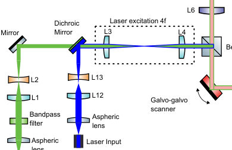
<figcaption class="paper-figure-caption"><b>Fig 3.</b> FIG. 3: Dual-excitation configuration at the laser input. A dichroic mirror combines the fiber-coupled 520 nm (NV) and 450 nm (MagLOV) excitation beams into a single collinear path routed through the shared 4f relay, galvo-galvo scanner, and microscope objective.</figcaption>
</figure>
<figure class="paper-figure-card">

<figcaption class="paper-figure-caption"><b>Fig 4.</b> FIG. 5: Schematic of the dual AOM-based laser pulse configuration.</figcaption>
</figure>
<figure class="paper-figure-card">
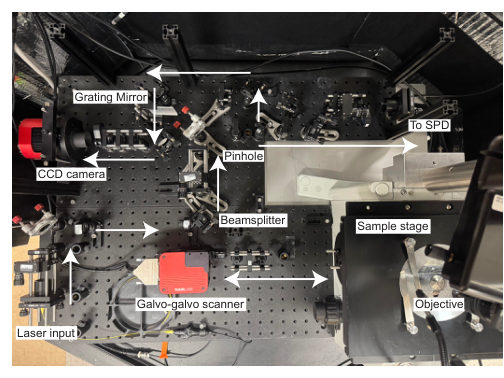
<figcaption class="paper-figure-caption"><b>Fig 5.</b> FIG. 4: Photograph of the pulsed quantum microscope showing the inverted Olympus IX71 microscope base (right) and assembled optical breadboard (left).</figcaption>
</figure>
</div>

<p><strong>Summary.</strong> The paper introduces a revolutionary pulsed quantum microscope designed to simultaneously probe and manipulate two distinct types of qubits—solid-state NV centers and genetically encoded biological spins—within live cells. By integrating sophisticated optical pulsing, microwave control, and precise addressing hardware, the platform achieves multiplexed quantum sensing capabilities previously unattainable in one instrument. This breakthrough opens new avenues for fundamental research into solid-state-biological quantum interfaces.</p>
<p><strong>Why it may be interesting.</strong> This work is highly relevant as it pushes the boundaries of quantum optics into biology by creating a unified platform to study solid-state quantum phenomena in complex, noisy, living systems, which requires advanced control over coherence times and environmental coupling.</p>
<details>
<summary>Detailed structure</summary>
<p><strong>Main problem.</strong> The central goal is developing a quantum microscope capable of simultaneously manipulating and sensing both solid-state (NV center) and genetically encoded biological qubits within the same live cell environment.</p>
<p><strong>Main result.</strong> The authors report building and demonstrating a novel pulsed platform that enables multiplexed quantum sensing by controlling both types of qubits in situ, paving the way for entanglement studies between them.</p>
<p><strong>Method.</strong> The technique employs a pulsed microscope setup integrating nanosecond-gated optics, 3D beam addressing (galvo/piezo), and microwave control spanning DC to 5 GHz to address distinct qubit resonances.</p>
<p><strong>Model / system.</strong> The platform integrates solid-state NV centers in diamond with optically addressable biological qubits (e.g., MagLOV). It is built upon an inverted microscope body, allowing for time-resolved measurements of spin dynamics and fluorescence signatures simultaneously.</p>
<p><strong>Key observables.</strong> Quantum state manipulation, entanglement potential, local magnetic field environment (via NV ODMR), radical-pair lifetimes, and Rabi/Ramsey oscillation decay times.</p>
<p><strong>Important parameters / regimes.</strong> Pulsed excitation regimes (nanosecond gating), microwave control frequencies ($\sim2.87$ GHz for NV; $500-800$ MHz for biological qubits), and picosecond timing resolution.</p>
<p><strong>Assumptions / limitations.</strong> The primary assumption is the successful integration of disparate, complex measurement modalities (NV spectroscopy vs. fluorescence lifetime imaging) into a single, aberration-corrected optical path compatible with live cells.</p>
<p><strong>Figures summary.</strong> Figures conceptually diagram the setup, showing energy level diagrams for both biological and NV qubits, and schematics detailing the nested 4f relay systems used to combine dual excitation paths (e.g., 520 nm and 450 nm).</p>
<p><strong>Paper structure.</strong> The paper progresses by first establishing the need for simultaneous sensing, then detailing the complex hardware integration (optics, electronics), demonstrating benchmarking on individual qubit types (NV vs. biological), and finally arguing for the potential of combined measurements toward entanglement.</p>
</details>
<details>
<summary>Abstract</summary>
<p>Two revolutions in quantum sensing are converging on the same microscope stage. Biological qubits have emerged as genetically encoded, optically addressable quantum systems inside live cells. Solid state spin based qubits have been entangled and used as nanoscale correlator magnetometers, delivering sensitivity and spatial-resolution gains that single-spin probes cannot reach. Here we report a pulsed quantum microscope that enables simultaneous quantum state manipulation of both qubit technologies in live cells. The platform combines nanosecond-gated optical excitation at 450 nm and 520 nm, three-dimensional diffraction-limited addressing by galvo beam scanning and piezo objective focus, rapidly switched static and radio-frequency magnetic fields, single-photon timing with picosecond resolution, and microwave control for frequencies from DC to 5 GHz, including the 2.87 GHz resonance of solid state spins, the 500 MHz to 800 MHz resonance of radical pairs in biological qubits, and any future qubit resonance in the GHz range. Live cell imaging with simultaneous biological and solid state nanoparticle qubits in the same cell demonstrates the power of this technique for multiplexed quantum sensing. We anticipate this approach will open new opportunities for researchers to explore quantum sensing in live cells, and, ultimately, entanglement between a solid-state qubit and a protein-hosted spin qubit.</p>
</details>
<p><sub><a href="#top">↑ back to top</a></sub></p>
<hr>
<p>
<a href="index.html">← Index</a>
 · <a href="papers_02.html">Next →</a>
</p>
<hr>

</body>
</html>
